<!doctype html>
<html lang="en">
<head>
  <meta charset="utf-8">
  <meta name="viewport" content="width=device-width, initial-scale=1">
  <title>arxiv digest — 2026-07-29</title>
  <style>
:root {
  --bg: #ffffff;
  --fg: #1f2328;
  --muted: #59636e;
  --border: #d0d7de;
  --card: #f6f8fa;
  --link: #0969da;
}
body {
  max-width: 980px;
  margin: 0 auto;
  padding: 2rem 1rem 5rem;
  font-family: -apple-system, BlinkMacSystemFont, "Segoe UI", Helvetica, Arial, sans-serif;
  line-height: 1.55;
  color: var(--fg);
  background: var(--bg);
}
a { color: var(--link); }
img { max-width: 100%; height: auto; }
pre, code { background: var(--card); border-radius: 6px; }
pre { padding: 1rem; overflow-x: auto; }
blockquote { border-left: 4px solid var(--border); padding-left: 1rem; color: var(--muted); }
details { margin: 0.6rem 0; }
summary { cursor: pointer; font-weight: 600; }
.paper-figures-scroll {
  display: flex;
  gap: 1rem;
  overflow-x: auto;
  overscroll-behavior-x: contain;
  padding: 0.75rem 0.25rem 1rem;
  margin: 1rem 0 1.25rem;
  border-top: 1px solid var(--border);
  border-bottom: 1px solid var(--border);
  scroll-snap-type: x proximity;
}
.paper-figure-card {
  flex: 0 0 min(260px, 72vw);
  scroll-snap-align: start;
  background: var(--card);
  border: 1px solid var(--border);
  border-radius: 12px;
  padding: 0.55rem;
}
.paper-figure-card img {
  display: block;
  width: 100%;
  max-height: 240px;
  object-fit: contain;
  background: white;
  border-radius: 8px;
}
.paper-figure-caption {
  display: block;
  margin-top: 0.5rem;
  color: var(--muted);
  font-size: 0.85rem;
}
.figure-strip-hint {
  color: var(--muted);
  font-size: 0.9rem;
  margin-bottom: -0.3rem;
}
</style>
  <!-- MathJax: renders $...$ inline math and $$...$$ display math, plus
       \(...\) and \[...\]. Loaded from the official CDN; works offline
       once cached. Configured to skip code/pre blocks so arxiv IDs that
       look like dollar amounts don't get mangled. -->
  <script>
    window.MathJax = {
      tex: {
        inlineMath: [['$', '$'], ['\\(', '\\)']],
        displayMath: [['$$', '$$'], ['\\[', '\\]']],
        processEscapes: true,
        processEnvironments: true
      },
      options: {
        skipHtmlTags: ['script', 'noscript', 'style', 'textarea', 'pre', 'code'],
        ignoreHtmlClass: 'tex2jax_ignore',
        processHtmlClass: 'tex2jax_process'
      }
    };
  </script>
  <script id="MathJax-script" async
    src="https://cdn.jsdelivr.net/npm/mathjax@3/es5/tex-chtml.js"></script>
</head>
<body>
<header style="background-color: #333; color: white; padding: 15px; margin-bottom: 20px;">
  <h1 style="margin: 0; font-size: 24px;">
    <a href="https://ochelpan.github.io/arXiv_clean/" style="color: white; text-decoration: none;">Main</a>
  </h1>
</header>

<h1>Daily arXiv Report</h1>

<hr>
<p>
<a href="index.html">← Index</a>
 · <a href="papers_05.html">← Previous</a> · <a href="papers_07.html">Next →</a>
</p>
<hr>

<h2>Papers 101–120</h2>
<p><a id="paper-2607.23590"></a></p>
<h3 id="an-integrated-dft-wannier-quantum-embedding-pipeline-for-strongly-correlated-materials-scaling-benchmarks-in-li-hbn"><a href="http://arxiv.org/abs/2607.23590v1">An Integrated DFT-Wannier-Quantum Embedding Pipeline for Strongly Correlated Materials: Scaling Benchmarks in Li-hBN</a></h3>
<p><strong>Authors:</strong> Hermawan Kresno Dipojono<br>
<strong>Type:</strong> theory · <strong>Category:</strong> strongly correlated electrons · <strong>PDF:</strong> <a href="https://arxiv.org/pdf/2607.23590v1">https://arxiv.org/pdf/2607.23590v1</a><br>
<strong>Analysis basis:</strong> full PDF text, analyzed in chunks
<strong>Topic relevance:</strong> <code>methods for driven-dissipative</code> <strong>3/5</strong> · <code>Keldysh / 2PI / non-Gaussian methods</code> <strong>1/5</strong> · <code>analog quantum simulation</code> <strong>1/5</strong> · <code>driven-dissipative phase transition</code> <strong>1/5</strong></p>
<div class="figure-strip-hint">↔ Scroll figures horizontally</div>
<div class="paper-figures-scroll">
<figure class="paper-figure-card">
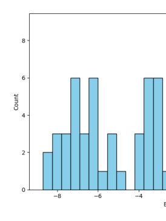
<figcaption class="paper-figure-caption"><b>Fig 1.</b> Figure 1: Distribution of onsite energies for the Wannier functions. The Fermi level (0 eV) separates the occupied valence states from the unoccupied conduction states.</figcaption>
</figure>
</div>

<p><strong>Summary.</strong> The paper introduces an integrated computational pipeline combining DFT with ADAPT-VQE to simulate strongly correlated materials like Li-hBN. By using Wannier functions and advanced tensor network techniques (MPS), it overcomes the exponential memory wall associated with large active spaces. This establishes a rigorous performance baseline for future hybrid quantum-classical simulations in condensed matter physics.</p>
<p><strong>Why it may be interesting.</strong> This work provides a crucial blueprint for applying quantum computing methods (like VQE) to condensed matter problems, specifically addressing the resource scaling issues inherent in simulating strongly correlated materials beyond current hardware limits.</p>
<details>
<summary>Detailed structure</summary>
<p><strong>Main problem.</strong> The core challenge is developing a scalable computational method to accurately simulate strongly correlated electronic systems, which are difficult for standard DFT methods.</p>
<p><strong>Main result.</strong> The authors successfully demonstrated an end-to-end pipeline that can process up to 28 active orbitals by employing tensor network techniques, establishing a clear performance benchmark for hybrid quantum-classical simulation.</p>
<p><strong>Method.</strong> The approach integrates DFT calculations with the ADAPT-VQE framework, enhanced by GOCP and MPS tensor networks to manage the exponential scaling of the Hilbert space.</p>
<p><strong>Model / system.</strong> The study uses Lithium Hexagonal Boron Nitride (Li-hBN) as a benchmark system. The electronic structure is modeled via Wannier functions derived from DFT, leading to an active-space Hamiltonian suitable for quantum embedding.</p>
<p><strong>Key observables.</strong> Variational energies calculated by ADAPT-VQE; the relationship between active-space size and computational demand.</p>
<p><strong>Important parameters / regimes.</strong> Active space size (benchmarked from 8 to 14 spatial orbitals); MPS bond dimension ($\chi_{\max} = 64$); singular value truncation threshold ($\epsilon_{	ext{trunc}} = 10^{-8}$).</p>
<p><strong>Assumptions / limitations.</strong> The primary limitation addressed is the exponential scaling of the Hilbert space, necessitating the use of bounded tensor networks (MPS) for tractability.</p>
<p><strong>Figures summary.</strong> Figure 1 shows onsite energy distributions; Table 2 summarizes variational energies and scaling parameters across different qubit counts (16 to 28 qubits).</p>
<p><strong>Paper structure.</strong> The paper outlines an end-to-end pipeline: DFT relaxation $
ightarrow$ NSCF calculations $
ightarrow$ Wannier localization, followed by the ADAPT-VQE simulation using GOCP and MPS tensor networks.</p>
</details>
<details>
<summary>Abstract</summary>
<p>The seamless integration of Density Functional Theory (DFT) with quantum variational algorithms is essential for the predictive simulation of strongly correlated materials. In this work, we present an end-to-end computational pipeline - comprising DFT geometry relaxation, non-self-consistent field (NSCF) calculations, and Wannier-based orbital localization - to prepare active-space Hamiltonians for quantum embedding. We utilize the Adaptive Variational Quantum Eigensolver (ADAPT-VQE) framework, significantly enhanced by a Greedy-Operator Commutativity Partitioning (GOCP) approach and a Taylor-expanded O(5) operator evolution strategy to efficiently manage the exponential scaling of the Hilbert space. We demonstrate this framework through a systematic benchmark study of Li-hBN, mapping the system onto qubit registers and investigating the convergence behavior as the active space is expanded from 8 to 14 spatial orbitals. Our results quantify the relationship between active-space size and computational demand, identifying a critical "scaling wall" where classical simulation costs transition from manageable to intractable. This study provides a rigorous performance baseline for the DFT-to-ADAPT-VQE workflow and offers empirical insights into the memory and processing limits currently facing hybrid quantum-classical architectures using advanced co-processing strategies.</p>
</details>
<p><sub><a href="#top">↑ back to top</a></sub></p>

<p><a id="paper-2607.24543"></a></p>
<h3 id="magnetic-anisotropy-in-the-near-stoichiometric-van-der-waals-ferromagnet-femath827mathgetemath828math"><a href="http://arxiv.org/abs/2607.24543v1">Magnetic anisotropy in the near-stoichiometric van der Waals ferromagnet Fe$_3$GeTe$_2$</a></h3>
<p><strong>Authors:</strong> Riju Pal, Joyal John Abraham, Satyabrata Bera, Mintu Mondal, Atindra Nath Pal, Bernd Buchner, Vladislav Kataev, Alexey Alfonsov<br>
<strong>Type:</strong> experiment · <strong>Category:</strong> strongly correlated electrons · <strong>PDF:</strong> <a href="https://arxiv.org/pdf/2607.24543v1">https://arxiv.org/pdf/2607.24543v1</a><br>
<strong>Analysis basis:</strong> full PDF text, analyzed in chunks
<strong>Topic relevance:</strong> <code>spintronics-quantum-optics interface</code> <strong>3/5</strong> · <code>analog quantum simulation</code> <strong>1/5</strong> · <code>exotic spin models in light-matter</code> <strong>1/5</strong> · <code>non-equilibrium dynamics</code> <strong>1/5</strong></p>
<div class="figure-strip-hint">↔ Scroll figures horizontally</div>
<div class="paper-figures-scroll">
<figure class="paper-figure-card">
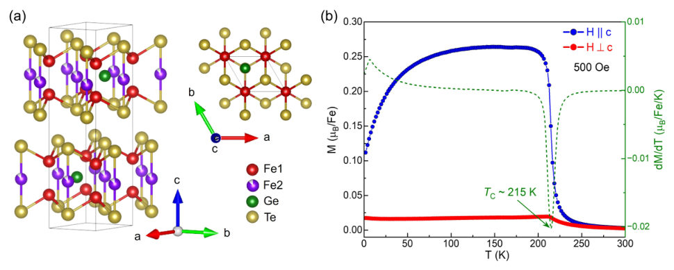
<figcaption class="paper-figure-caption"><b>Fig 1.</b> Figure 1. (a) Crystal structure of Fe3GeTe2. The unit cell (left) and the top view (right) of a single vdW layer of Fe3GeTe2 are shown here. The unit cell is enclosed using the dotted lines. The top view of the structure shows the hexagonal symmetry of the ab plane. Two inequivalent Fe sites are termed Fe1 and Fe2. (b) The temperature dependence of magnetization and its temperature derivative, measured under a magnetic field of 500 Oe in the H ∥c and H ⊥c configurations. The minimum in the temperature derivative of the magnetization (dM/dT) reveals the Curie temperature TC ∼215 K of Fe3GeTe2.</figcaption>
</figure>
<figure class="paper-figure-card">
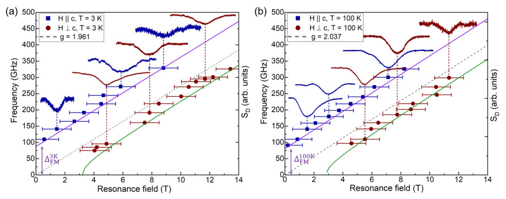
<figcaption class="paper-figure-caption"><b>Fig 2.</b> Figure 2. Frequency dependence of the resonance fields Hres at T = 3 K (a) and 100 K (b) measured in H ∥c (blue squares) and in H ⊥c (red circles) configurations, respectively. Dashed lines represent the paramagnetic response estimated with Eq. 1 with the average g-factors given in the legends. Solid lines indicate the simulated best fit results using Eq. 2.1 and 2.2. Representative normalized and vertically shifted spectra are shown for some of the frequencies (right vertical axis) with the colors following respective magnetic field orientations.</figcaption>
</figure>
<figure class="paper-figure-card">
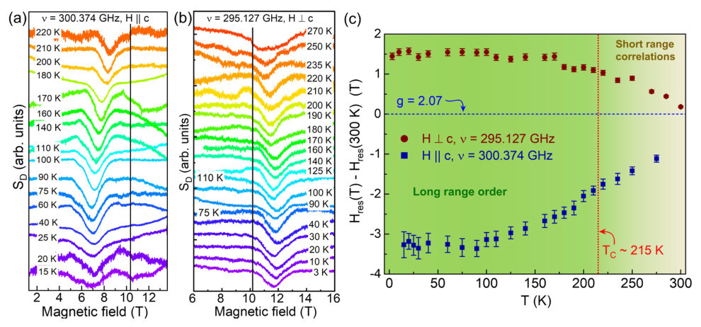
<figcaption class="paper-figure-caption"><b>Fig 3.</b> Figure 3. Temperature evolution of the HF-ESR spectra in the field direction H ∥c (a) and H ⊥c (b), measured at fixed excitation frequencies of approximately 300 GHz. For clarity, all spectra are normalized to unity and vertically offset. Vertical black solid lines indicate the expected paramagnetic resonance position as given by Eq. 1. (c) Temperature dependence of the resonance shift, δH(T), at a microwave frequency ν of ≈300 GHz with an external magnetic field applied parallel (blue squares) and perpendicular (red circles) to the c axis. A blue dashed line indicates the zero shift in the paramagnet state with the g-factor, g = 2.07. The red dotted line shows the ordering temperature (TC...</figcaption>
</figure>
<figure class="paper-figure-card">
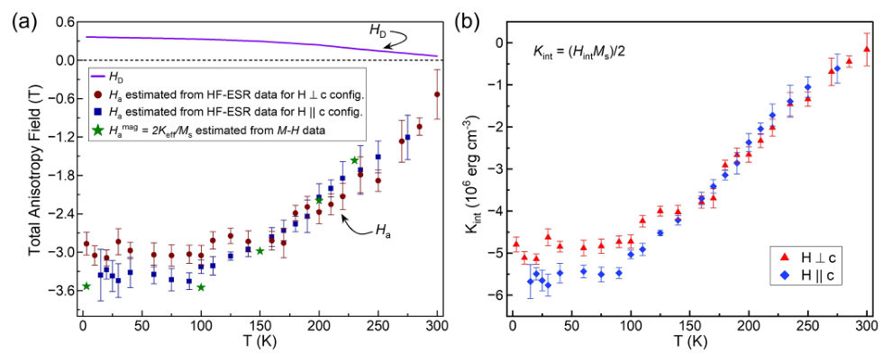
<figcaption class="paper-figure-caption"><b>Fig 4.</b> Figure 4. (a) Total anisotropy field Ha as a function of temperature for both H ⊥c and H ∥c configurations, extracted from the temperature dependence of the resonance fields. The purple solid line is the calculated shape anisotropy field HD given by the shape of the crystal. Green stars are the total anisotropy field calculated from the M −H data. (b) Temperature dependence of the intrinsic MA constant (Kint) estimated from the measurements in the H ⊥c and H ∥c configurations, respectively.</figcaption>
</figure>
<figure class="paper-figure-card">
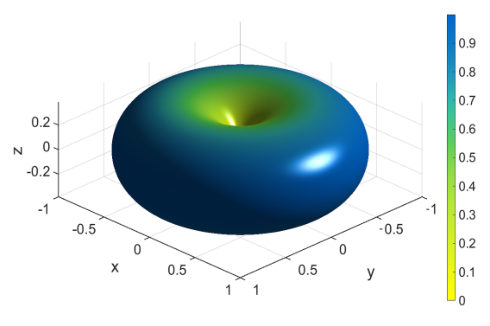
<figcaption class="paper-figure-caption"><b>Fig 5.</b> Figure 5. Anisotropy energy density demonstration in Carte- sian coordinates (following Eq. 5), illustrating magnetic anisotropy of a single sublattice of Fe3GeTe2, as follows from the analysis of the HF-ESR results. Here, the yellow color corresponds to the energetically favorable direction (easy axis along the c-axis), while blue indicates higher-energy regions (hard plane). The surface is rotationally symmetric about the z-axis, reflecting the uniaxial magnetic anisotropy of the crystal.</figcaption>
</figure>
</div>

<p><strong>Summary.</strong> This work uses high-frequency Electron Spin Resonance (ESR) on $   ext{Fe}_3   ext{GeTe}_2$ to characterize its magnetic anisotropy and spin dynamics. Key findings include confirming easy-axis ferromagnetism, measuring a large magnon gap, and showing that the material's magnetic properties are extremely sensitive to minor changes in chemical stoichiometry. It establishes this compound as an excellent model system for studying tunable magnetism in 2D materials.</p>
<p><strong>Why it may be interesting.</strong> The study provides quantitative measurements of magnon excitations and magnetic anisotropy in a highly tunable 2D system, which is crucial for understanding emergent quantum phenomena in low-dimensional magnets relevant to spintronics and quantum simulation.</p>
<details>
<summary>Detailed structure</summary>
<p><strong>Main problem.</strong> To gain quantitative insights into the magnetic anisotropy and spin dynamics of quasi-two-dimensional (2D) van der Waals ferromagnets, specifically investigating the role of Fe stoichiometry.</p>
<p><strong>Main result.</strong> The study established $    ext{Fe}_3   ext{GeTe}_2$ as an easy-axis ferromagnet with a large magnon gap ($\approx 87.8 	ext{ GHz}$ at $3 	ext{ K}$) and demonstrated that spin dynamics are extremely sensitive to small variations in Fe content.</p>
<p><strong>Method.</strong> The primary methods involved comprehensive Electron Spin Resonance (ESR) measurements across wide ranges of frequencies, temperatures, and magnetic fields, supplemented by magnetization measurements ($M-T$, $M-H$).</p>
<p><strong>Model / system.</strong> The physical system is the near-stoichiometric van der Waals ferromagnet $  ext{Fe}_3   ext{GeTe}_2$, which exhibits itinerant magnetism in a quasi-two-dimensional layered structure.</p>
<p><strong>Key observables.</strong> Magnetic anisotropy, internal magnetic field evolution with temperature, uniaxial magnetocrystalline anisotropy ($K_{	ext{int}}$), and the zero-field magnon gap ($\Delta$).</p>
<p><strong>Important parameters / regimes.</strong> Low temperatures (e.g., $3 	ext{ K}$), specific stoichiometry variations ($  ext{Fe}_{3.03}  ext{GeTe}_2$), and high magnetic fields ($16 	ext{ T}$).</p>
<p><strong>Assumptions / limitations.</strong> The analysis relies on fitting the experimental data to established models for uniaxial ferromagnets, assuming the material behaves as a model vdW ferromagnet.</p>
<p><strong>Figures summary.</strong> Figures illustrate crystal structure details (hexagonal symmetry), temperature dependence of magnetization ($M-T$), and how magnetic anisotropy parameters vary with field orientation relative to the $c$-axis.</p>
<p><strong>Paper structure.</strong> The paper progresses by first characterizing the material's basic ferromagnetic nature via frequency-dependent ESR, then analyzing the temperature evolution of the internal field to detect short-range correlations above $T_C$, and finally quantifying anisotropy parameters like $K_{	ext{int}}$ and $\Delta$ using spin-wave analysis.</p>
</details>
<details>
<summary>Abstract</summary>
<p>Quasi-two-dimensional (2D) van der Waals (vdW) ferromagnets such as the series Fe$_{3-x}$GeTe$_2$, with a relatively high Curie temperature and robust metallicity, offer an ideal platform for investigating itinerant magnetism in reduced dimensions. Here, we present a comprehensive electron spin resonance (ESR) investigation of single-crystalline almost-stoichiometric Fe$_{3.03 \pm 0.03}$GeTe$_{2}$ across wide ranges of frequencies, temperatures, and magnetic fields to gain quantitative insights into its magnetic anisotropy and spin dynamics. Frequency-dependent ESR measurements establish Fe$_{3}$GeTe$_{2}$ as an easy-axis ferromagnet. Temperature-dependent high-field ESR reveals a large internal field that gradually decreases at higher temperatures. Remarkably, this internal field persists even above $T_\mathrm{C}$, evidencing short-range spin correlations in Fe$_{3}$GeTe$_{2}$. Analysis of spin-wave modes yields a strong uniaxial magnetocrystalline anisotropy $K_{\text{int}} \approx - 5 \times 10^6$ erg cm$^{-3}$ at 3 K and a large magnon gap $Δ(3 \mathrm{K})$ $\approx$ 87.8 $\pm$ 13.7 GHz ($\approx$ 0.363 $\pm$ 0.057 meV). Our study highlights that small variations in Fe content in Fe$_{3}$GeTe$_{2}$ lead to substantial changes in the magnon gap at low temperatures, indicating the extreme sensitivity of spin dynamics to the chemical composition. These results establish Fe$_{3}$GeTe$_{2}$ as a model vdW ferromagnet for exploring tunable anisotropies and magnon excitations in metallic 2D magnets.</p>
</details>
<p><sub><a href="#top">↑ back to top</a></sub></p>

<p><a id="paper-2607.23276"></a></p>
<h3 id="performance-of-krotov-pronto-and-pinn-for-optimal-control-of-quantum-gates"><a href="http://arxiv.org/abs/2607.23276v1">Performance of Krotov, PRONTO and PINN for optimal control of quantum gates</a></h3>
<p><strong>Authors:</strong> Martín D. Jiménez, Murilo D. Forlevesi, Emanuel F. de Lima, Leonardo K. Castelano<br>
<strong>Type:</strong> theory · <strong>Category:</strong> quantum information and computing · <strong>PDF:</strong> <a href="https://arxiv.org/pdf/2607.23276v1">https://arxiv.org/pdf/2607.23276v1</a><br>
<strong>Analysis basis:</strong> full PDF text, analyzed in chunks
<strong>Topic relevance:</strong> <code>methods for driven-dissipative</code> <strong>3/5</strong> · <code>QC/QI experiment</code> <strong>1/5</strong> · <code>quantum measurements</code> <strong>1/5</strong> · <code>spintronics-quantum-optics interface</code> <strong>1/5</strong></p>
<div class="figure-strip-hint">↔ Scroll figures horizontally</div>
<div class="paper-figures-scroll">
<figure class="paper-figure-card">
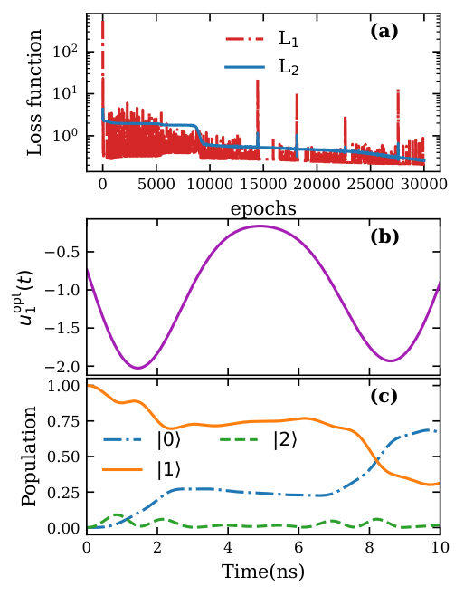
<figcaption class="paper-figure-caption"><b>Fig 1.</b> FIG. 1. (a) Loss functions according to Eqs. (39) and (40) as a function of the number of epochs. (b) The optimized control field uopt 1 (t) and (c) the populations for each state, obtained by driving the system with this optimized control, considering the initial state |ψ(0)⟩= |1⟩, as a function of time.</figcaption>
</figure>
<figure class="paper-figure-card">
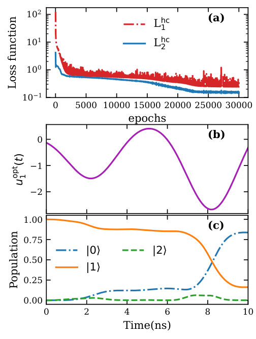
<figcaption class="paper-figure-caption"><b>Fig 2.</b> FIG. 2. (a) Loss functions according to Eqs. (43) and (44) as a function of the number of epochs. (b) The optimized control field uopt 1 (t) and (c) the populations for each state, obtained by driving the system with this optimized control, considering the initial state |ψ(0)⟩= |1⟩, as a function of time.</figcaption>
</figure>
<figure class="paper-figure-card">
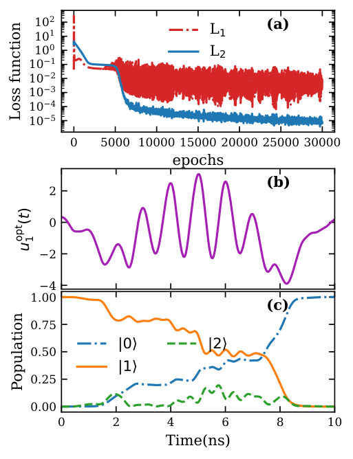
<figcaption class="paper-figure-caption"><b>Fig 3.</b> FIG. 4. (a) Loss functions according to Eqs. (39) and (40) as a function of the number of epochs. (b) The optimized control field uopt 1 (t) and (c) the populations for each state, obtained by driving the system with this optimized control, considering the initial state |ψ(0)⟩= |1⟩, as a function of time.</figcaption>
</figure>
<figure class="paper-figure-card">
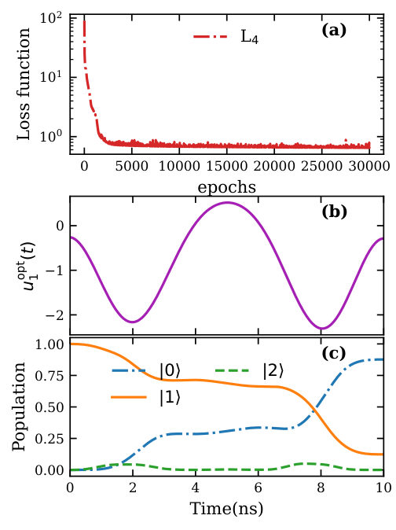
<figcaption class="paper-figure-caption"><b>Fig 4.</b> FIG. 3. (a) Loss functions according to Eq. (46) as a function of the number of epochs. (b) The optimized control field uopt 1 (t) and (c) the populations for each state, obtained by driving the system with this optimized control, considering the initial state |ψ(0)⟩= |1⟩, as a function of time.</figcaption>
</figure>
<figure class="paper-figure-card">

<figcaption class="paper-figure-caption"><b>Fig 5.</b> Figure 4 (c) shows the population of the state as a function of time, and the population of the state |0⟩in- creases to 0.99999 in the final time. In summary, our new procedure is capable of solving the control problem with very high fidelity. The use of hard constraints within this new procedure does not bring any advantages (results not shown here); therefore, all the results presented hereafter will minimize the loss functions of Eqs. (39) and (40) by employing the pretraining, normalization in each epoch, and the inclusion of the Fourier features. Figures 5 (a) and 6 (a) show the value of the functional</figcaption>
</figure>
</div>

<p><strong>Summary.</strong> This paper develops an enhanced Physics-Informed Neural Network scheme (PINNQOC) for solving quantum optimal control problems. It benchmarks this ML approach against established methods like Krotov's and PRONTO's on multi-level qubit systems. The results show that PINNQOC achieves high fidelity while offering a promising pathway for real-time, adaptive control in future autonomous quantum hardware.</p>
<p><strong>Why it may be interesting.</strong> This work directly addresses the practical implementation challenges in quantum computing by providing a machine learning approach (PINN) that can automate pulse engineering and adapt to hardware imperfections better than purely analytical or trajectory-dependent solvers.</p>
<details>
<summary>Detailed structure</summary>
<p><strong>Main problem.</strong> The core problem is achieving high-fidelity quantum gate operations while actively suppressing population leakage into non-computational states.</p>
<p><strong>Main result.</strong> The proposed PINNQOC framework successfully matches the fidelity of traditional solvers (Krotov, PRONTO) and demonstrates superior leakage suppression in multi-level systems.</p>
<p><strong>Method.</strong> The authors propose an enhanced Physics-Informed Neural Network scheme (PINNQOC) to solve quantum optimal control problems, benchmarking it against established gradient-based methods like Krotov's and PRONTO's optimization techniques.</p>
<p><strong>Model / system.</strong> The study uses truncated multi-level systems as models, specifically a three-level fluxonium qubit and a four-level Nitrogen-Vacancy center coupled to a Carbon-13 nuclear spin. The dynamics are governed by the time-dependent Schrödinger equation.</p>
<p><strong>Key observables.</strong> Gate fidelity (target vs. achieved), mean population leakage ($\ell$), computational time, and iteration efficiency.</p>
<p><strong>Important parameters / regimes.</strong> Penalization factors ($q=0.2$ or $0.3$), target gate specifications, and the number of time steps ($N_t$).</p>
<p><strong>Assumptions / limitations.</strong> Standard PINNs suffer from numerical bottlenecks (spectral bias) when solving highly oscillatory dynamics; traditional solvers are strictly trajectory-specific.</p>
<p><strong>Figures summary.</strong> The notes indicate comparisons across multiple tables summarizing performance metrics for different gate types and system sizes, comparing fidelity, leakage, time, and iterations for the three methods.</p>
<p><strong>Paper structure.</strong> The paper introduces the problem of high-fidelity control, details the theoretical background of QOC (Krotov/PRONTO), presents the novel PINNQOC framework enhancements, benchmarks performance on specific multi-level qubits, and concludes with an analysis of computational trade-offs for autonomous quantum hardware.</p>
</details>
<details>
<summary>Abstract</summary>
<p>Achieving scalable quantum computing demands high-fidelity operations capable of mitigating population leakage into non-computational states. Physics-Informed Neural Networks (PINNs) have recently emerged as a powerful paradigm to unify quantum hardware characterization (inverse problems) and pulse engineering (direct problems), laying the foundational architecture for autonomous quantum processors. However, standard PINN frameworks face severe numerical bottlenecks, such as spectral bias, when attempting to simultaneously solve highly oscillatory multi-level dynamics and optimize continuous control fields under strict global phase constraints. In this work, we propose an enhanced PINN scheme for quantum optimal control (PINNQOC) that circumvents these limitations by incorporating Fourier feature embeddings, dynamic epoch normalization, and an informed pre-training routine. To rigorously evaluate its performance, we systematically benchmark our framework against two premier continuous control solvers: the first-order Krotov method and the second-order Projection Operator Newton Method for Trajectory Optimization (PRONTO). These techniques are applied to implement multiple quantum gates on a truncated three-level fluxonium qubit and a four-level Nitrogen-Vacancy center coupled to a Carbon-13 nuclear spin. Our advanced PINNQOC approach successfully suppresses population leakage while achieving gate fidelities exceeding 99.9$\%$, matching the efficacy of traditional solvers. Finally, we provide a comprehensive analysis of computational times, iteration efficiency, and mean leakage, highlighting the distinct trade-offs and avenues for embedding physics-guided machine learning into automated quantum hardware pipelines.</p>
</details>
<p><sub><a href="#top">↑ back to top</a></sub></p>

<p><a id="paper-2607.22818"></a></p>
<h3 id="practical-advantage-beyond-the-quadratic-speedup-limit-with-fully-quantum-walks"><a href="http://arxiv.org/abs/2607.22818v1">Practical advantage beyond the quadratic speedup limit with fully-quantum walks</a></h3>
<p><strong>Authors:</strong> Massimiliano Incudini, Guglielmo Mazzola<br>
<strong>Type:</strong> theory · <strong>Category:</strong> disordered systems and neural networks · <strong>PDF:</strong> <a href="https://arxiv.org/pdf/2607.22818v1">https://arxiv.org/pdf/2607.22818v1</a><br>
<strong>Analysis basis:</strong> full PDF text, analyzed in chunks
<strong>Topic relevance:</strong> <code>exotic spin models in light-matter</code> <strong>3/5</strong> · <code>analog quantum simulation</code> <strong>1/5</strong> · <code>methods for driven-dissipative</code> <strong>1/5</strong> · <code>non-equilibrium dynamics</code> <strong>1/5</strong></p>
<div class="figure-strip-hint">↔ Scroll figures horizontally</div>
<div class="paper-figures-scroll">
<figure class="paper-figure-card">
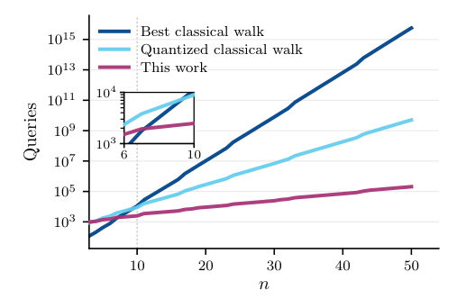
<figcaption class="paper-figure-caption"><b>Fig 1.</b> FIG. 1: Number of queries as a function of n for β = 4 and ε = 10−2. The vertical dashed line separates exact simulations from numerical extrapolations.</figcaption>
</figure>
<figure class="paper-figure-card">
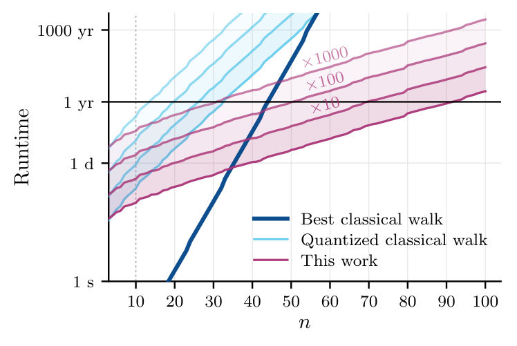
<figcaption class="paper-figure-caption"><b>Fig 2.</b> FIG. 2: Runtime versus system size n for β = 4 and TV-distance error ε = 10−2. The vertical dashed line separates exact simulations from numerical extrapolations. For the quantum methods, the lowest line assumes a physical operation time of 20 ns, while the subsequent lines increase this time by factors of 10, 100, and 1000. The classical walk is implemented on FPGA hardware.</figcaption>
</figure>
<figure class="paper-figure-card">
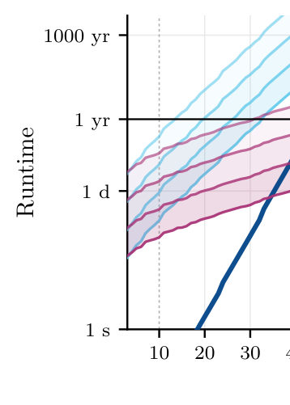
<figcaption class="paper-figure-caption"><b>Fig 3.</b> Figure 2 shows the runtime estimate as a function of the system size n for the three main walks considered in the text. These results are obtained by combining the query costs simulations of the previous Sect. IV A with the cost of a single logical classical and quantum steps (see Sect. III C, III D and III E). We choose the hybrid fixed-point arithmetic for the quantum walk operator, which is the most time efficient implementation albeit the space scales about quadratically in the space. Additional experiments at different β and ε are shown in Appendix I.</figcaption>
</figure>
<figure class="paper-figure-card">
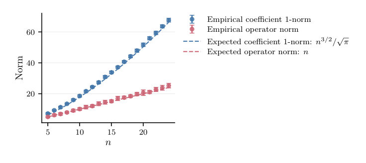
<figcaption class="paper-figure-caption"><b>Fig 4.</b> FIG. 3: Empirical coefficient 1-norm and operator norm of 30 independent random instances for each system size n = 5, . . . , 24, compared with the expected scalings n3/2/√π and n. Error bars show one standard deviation.</figcaption>
</figure>
<figure class="paper-figure-card">
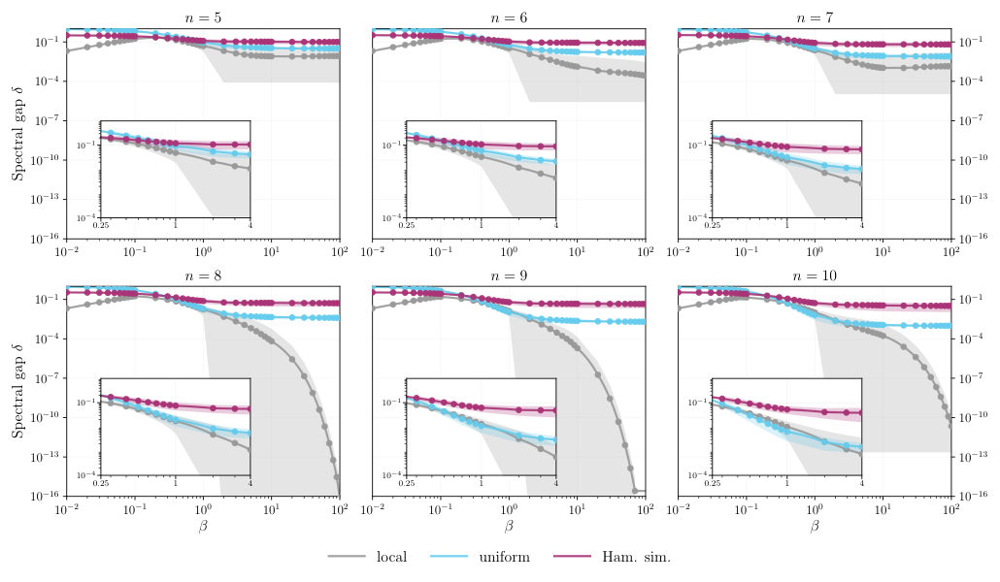
<figcaption class="paper-figure-caption"><b>Fig 5.</b> FIG. 4: Spectral gap as a function of β for a fixed number of spins n. Grey, light blue and magenta lines correspond to the local, uniform, and Hamiltonian simulation moves, respectively. The shaded areas show one standard deviation. The statistics shown are the mean and standard deviation.</figcaption>
</figure>
</div>

<p><strong>Summary.</strong> The paper proposes a novel 'fully-quantum Metropolis walk' algorithm designed to sample complex probability distributions arising from Ising models. By making both proposal and acceptance steps inherently quantum via Hamiltonian simulation, the authors achieve significant theoretical speedups over existing quantum walk methods. This work establishes that super-quadratic advantages are achievable for sampling problems in condensed matter physics.</p>
<p><strong>Why it may be interesting.</strong> This work directly addresses how advanced quantum walk techniques can provide polynomial speedups for sampling problems relevant to spin glasses and disordered systems, pushing beyond previously assumed quadratic limits.</p>
<details>
<summary>Detailed structure</summary>
<p><strong>Main problem.</strong> The primary goal is efficiently sampling from the low-temperature Gibbs distribution of classical dense Ising models, which is a key problem in statistical physics.</p>
<p><strong>Main result.</strong> The authors demonstrate that fully-quantum Metropolis walks can achieve an asymptotic advantage of about a cubic polynomial over previous quantum walk methods, suggesting super-quadratic speedups are possible.</p>
<p><strong>Method.</strong> They introduce 'fully-quantum Metropolis walks' where both proposal and acceptance steps are intrinsically quantum, utilizing Hamiltonian simulation for the proposal mechanism within a Szegedy quantum walk framework.</p>
<p><strong>Model / system.</strong> The study focuses on classical dense Ising models defined by a Hamiltonian $H(\mathbf{x})$, aiming to sample the low-temperature Gibbs distribution $\pi_eta(x)$. The analysis involves simulating annealing paths across various inverse temperatures ($eta$).</p>
<p><strong>Key observables.</strong> Total variation distance ($\|q - \pi_eta\|_{TV}$), spectral gap ($\delta_eta$), and query complexity (classical vs. quantum counts).</p>
<p><strong>Important parameters / regimes.</strong> Inverse temperature $eta$, error tolerance $\epsilon$, system size $n$, and the annealing schedule parameters.</p>
<p><strong>Assumptions / limitations.</strong> The analysis relies on fault-tolerant compilation of primitives, using a Zeno-rewind protocol to manage spectral projections, and assuming parallel execution for Pauli measurements.</p>
<p><strong>Figures summary.</strong> Figures compare resource requirements (e.g., surface code distance vs. $n$) across different proposals (local, uniform, Hamiltonian) and varying error tolerances ($\epsilon$), showing the crossover point where quantum walks outperform classical methods.</p>
<p><strong>Paper structure.</strong> The paper builds from defining the sampling problem using MCMC/quantum walks to introducing the novel fully-quantum proposal mechanism. It then details the resource scaling analysis across an annealing schedule, culminating in runtime comparisons against state-of-the-art classical and quantum approaches.</p>
</details>
<details>
<summary>Abstract</summary>
<p>We introduce a new class of fully-quantum Metropolis walks in which both the proposal and acceptance steps are intrinsically quantum. Unlike standard quantum walks obtained by quantizing classically efficient Markov chains, our algorithm employs Hamiltonian simulation as a quantum-native proposal mechanism, enlarging the class of quantum walks beyond classical counterparts. We target the problem of sampling from the low-temperature Gibbs distribution of classical dense Ising models, within a fixed error in total variation distance. This approach achieves about a cubic polynomial asymptotic advantage over previous quantum-walks, resulting in a total sixth-degree polynomial queries speedup compared to the best classical walk. This shows that speedups beyond the widely assumed quadratic limit are possible within the quantum walk formalism. We perform a complete fault-tolerant compilation of all algorithmic primitives and benchmark against CPU, GPU, and FPGA implementations of the best classical Markov chain. Under identical hardware assumptions, the resulting advantage runtime crossover is reduced from approximately $10^3$ years for conventional quantum walks to less than one day. These results identify fully-quantum Markov chains as a promising route toward practical quantum advantage.</p>
</details>
<p><sub><a href="#top">↑ back to top</a></sub></p>

<p><a id="paper-2607.24644"></a></p>
<h3 id="quantum-limited-symbol-blind-channel-estimation-for-coherent-state-discrimination"><a href="http://arxiv.org/abs/2607.24644v1">Quantum-Limited Symbol-Blind Channel Estimation for Coherent State Discrimination</a></h3>
<p><strong>Authors:</strong> Hongxu Chen, Renzhi Yuan, Haifeng Yao, Mugen Peng<br>
<strong>Type:</strong> theory · <strong>Category:</strong> quantum information and computing · <strong>PDF:</strong> <a href="https://arxiv.org/pdf/2607.24644v1">https://arxiv.org/pdf/2607.24644v1</a><br>
<strong>Analysis basis:</strong> full PDF text, analyzed in chunks
<strong>Topic relevance:</strong> <code>quantum measurements</code> <strong>3/5</strong> · <code>Keldysh / 2PI / non-Gaussian methods</code> <strong>1/5</strong> · <code>entanglement &amp; information structure</code> <strong>1/5</strong> · <code>interference shaping light</code> <strong>1/5</strong></p>
<div class="figure-strip-hint">↔ Scroll figures horizontally</div>
<div class="paper-figures-scroll">
<figure class="paper-figure-card">
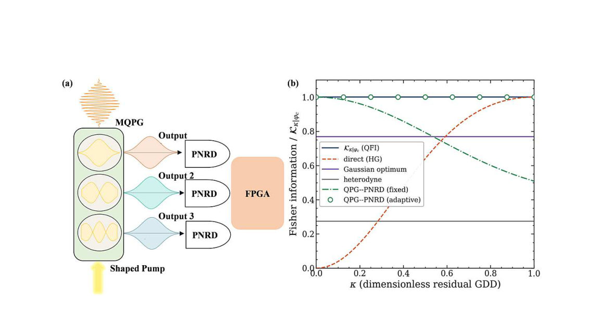
<figcaption class="paper-figure-caption"><b>Fig 1.</b> FIG. 1. (a) An MQPG implements the three-mode analysis and routes the outputs to frequency-</figcaption>
</figure>
<figure class="paper-figure-card">
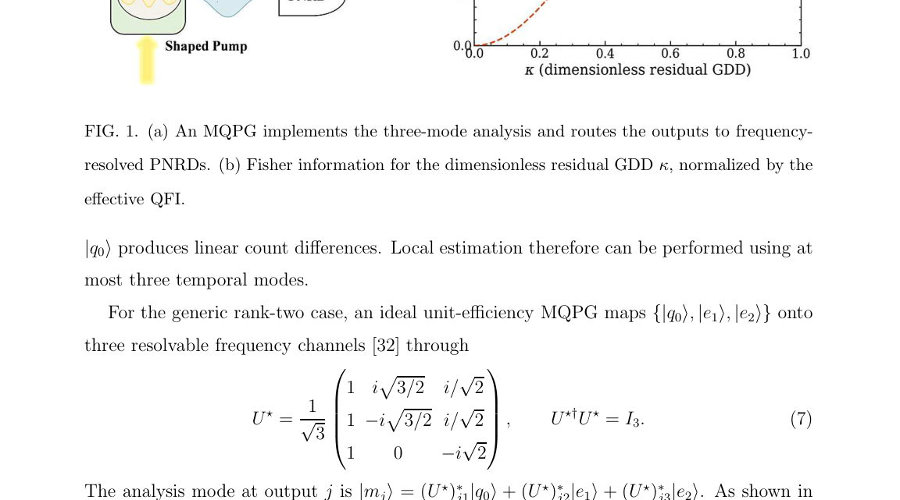
<figcaption class="paper-figure-caption"><b>Fig 2.</b> Fig. 1(a), the first column distributes |q0⟩equally among the outputs, while the remaining</figcaption>
</figure>
<figure class="paper-figure-card">
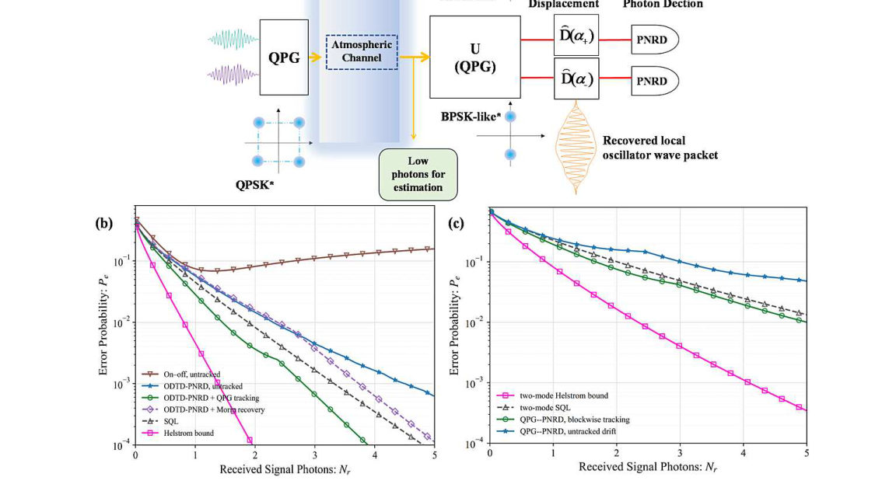
<figcaption class="paper-figure-caption"><b>Fig 3.</b> FIG. 2. (a) Proposed temporal-mode-assisted receiver. (b) Error probabilities of Kennedy-type</figcaption>
</figure>
</div>

<p><strong>Summary.</strong> This paper develops a quantum-enhanced technique for estimating channel impairments like dispersion and delay in low-photon-number optical links. By employing a Quantum Pulse Gate with photon-number resolution, the authors show that they can achieve measurement precision limited only by fundamental quantum noise, surpassing classical bounds.</p>
<p><strong>Why it may be interesting.</strong> This work directly applies advanced quantum information techniques (QFI, POVMs) to a practical problem in quantum communication (optical fiber links), providing concrete bounds on achievable sensing precision below the SQL.</p>
<details>
<summary>Detailed structure</summary>
<p><strong>Main problem.</strong> The primary goal is establishing the quantum limit for blind joint estimation of group delay ($   au$) and second-order dispersion ($\kappa$) in photon-starved coherent optical links.</p>
<p><strong>Main result.</strong> A Quantum Pulse Gate (QPG) combined with Photon-Number-Resolving Detectors (PNRDs) measurement locally attains the Quantum Cramér–Rao Bound, achieving performance below the Standard Quantum Limit (SQL).</p>
<p><strong>Method.</strong> The analysis uses quantum estimation theory, deriving the effective Quantum Fisher Information matrix by exploiting parity decomposition and eliminating unknown common carrier phases via a Schur complement.</p>
<p><strong>Model / system.</strong> The system models coherent state discrimination in fiber links suffering from residual dispersion. The measurement setup involves projecting the field onto phase-diverse temporal modes using a QPG followed by PNRD detection.</p>
<p><strong>Key observables.</strong> Quantum Fisher Information (QFI) matrix, error probabilities ($P_e$), and the covariance matrix $C$ of centered generators.</p>
<p><strong>Important parameters / regimes.</strong> Average photon number ($N_s$), residual dispersion ($\kappa$), group delay ($  au$), and detector efficiency ($\eta_d$).</p>
<p><strong>Assumptions / limitations.</strong> The analysis neglects third-order dispersion, assumes equiprobable M-ary PSK states, and utilizes the Schur complement to eliminate unknown common phase dependence.</p>
<p><strong>Figures summary.</strong> Figures illustrate the proposed temporal-mode-assisted receiver setup and compare error probabilities for different mode-recovery strategies under simulated residual dispersion, showing performance below the SQL.</p>
<p><strong>Paper structure.</strong> The paper progresses from defining the physical problem (dispersion in coherent links) to deriving the QCRB using quantum measurement theory. It details the construction of the optimal QPG/PNRD measurement and concludes by demonstrating that this method surpasses classical limits for blind parameter estimation.</p>
</details>
<details>
<summary>Abstract</summary>
<p>Residual dispersion breaks temporal-mode matching in photon-starved coherent links. For equiprobable $M$-ary PSK coherent states in a known spectral mode, with unknown symbols and carrier phase, we establish the quantum limit for blind joint estimation of group delay and second-order dispersion: after eliminating the common phase, it is $4N_s\mathbf{C}$, set by the covariance of the centered generators alone. A multi-output quantum pulse gate with photon-number-resolving detection locally attains it and supports reception below the standard quantum limit under turbulent fading.</p>
</details>
<p><sub><a href="#top">↑ back to top</a></sub></p>

<p><a id="paper-2607.23604"></a></p>
<h3 id="performance-and-stability-of-quantum-krylov-diagonalization-for-the-hubbard-model"><a href="http://arxiv.org/abs/2607.23604v1">Performance and Stability of Quantum Krylov Diagonalization for the Hubbard Model</a></h3>
<p><strong>Authors:</strong> Mohammad Mirzakhani, Hyukgun Kwon, Kyungsun Moon<br>
<strong>Type:</strong> both · <strong>Category:</strong> strongly correlated electrons · <strong>PDF:</strong> <a href="https://arxiv.org/pdf/2607.23604v1">https://arxiv.org/pdf/2607.23604v1</a><br>
<strong>Analysis basis:</strong> full PDF text, analyzed in chunks
<strong>Topic relevance:</strong> <code>analog quantum simulation</code> <strong>3/5</strong> · <code>QC/QI experiment</code> <strong>2/5</strong></p>
<div class="figure-strip-hint">↔ Scroll figures horizontally</div>
<div class="paper-figures-scroll">
<figure class="paper-figure-card">
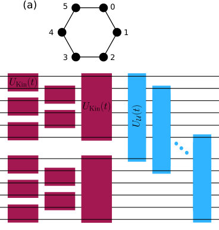
<figcaption class="paper-figure-caption"><b>Fig 1.</b> FIG. 1. (a) 1D Hubbard chain with PBC, illustrated for the representative case of L = 6 lattice sites labeled from 0 to 5. (b) Quantum circuit implementing the time-evolution op- erator of the Hubbard Hamiltonian [Eq. (1)]. The first L qubits encode the spin-up orbitals, while the remaining L qubits encode the spin-down orbitals. The red blocks, UKin(t), implement the hopping evolution between neighboring lat- tice sites, whereas the blue blocks, UU(t), implement the on- site Coulomb interaction between the spin-up and spin-down qubits associated with the same lattice site (qi and qL+i). Details of the circuit decomposition for UKin(t) and UU(t) are given in Ref. [54].</figcaption>
</figure>
<figure class="paper-figure-card">
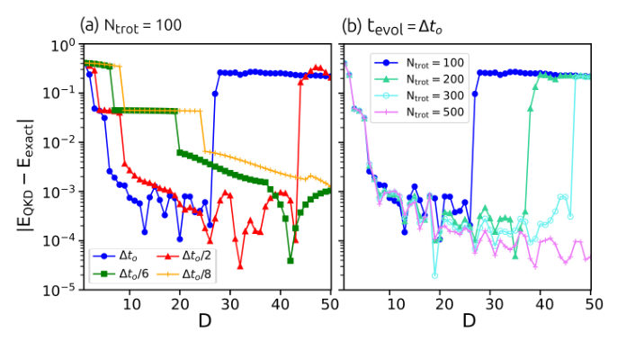
<figcaption class="paper-figure-caption"><b>Fig 2.</b> FIG. 3. (a) Absolute GSE error as a function of the Krylov dimension D for different evolution times tevol, as indicated in the figure. Results are shown for the weakly interacting case U0 = 2 using Ntrot = 100 Trotter steps. (b) GSE error for the tevol = ∆to case shown in panel (a), obtained with different Trotter numbers, Ntrot = 100, 200, 300, and 500. The reference evolution time is ∆to = π/∥H∥≈0.28.</figcaption>
</figure>
<figure class="paper-figure-card">
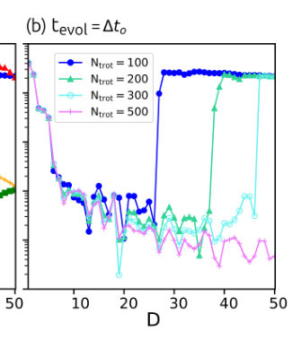
<figcaption class="paper-figure-caption"><b>Fig 3.</b> Figure 3(a) shows the convergence of the QKD GSE for the half-filled six-site Hubbard model as a function of the Krylov dimension D for several choices of tevol. The evolution time is expressed relative to the reference scale ∆to = π/∥H∥[42, 48], where ∥H∥denotes the spectral norm of the Hamiltonian. We present results for the weakly interacting case U0 = 2 with Ntrot = 100, while the effects of varying interaction strength are discussed in Sec. III A 3. Figure 3(a) reveals two distinct convergence regimes governed by the competition between Krylov approxi- mation and time-discretization (Trotter) errors. For suf- ficiently small evolution times, namely tevol = ∆to/6 and tevol = ∆to/8, the...</figcaption>
</figure>
<figure class="paper-figure-card">
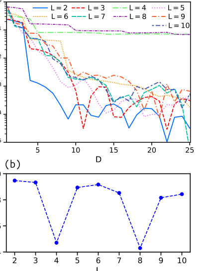
<figcaption class="paper-figure-caption"><b>Fig 4.</b> FIG. 4. (a) Convergence of the GSE error as a function of the Krylov dimension D for different lattice sizes L. For each system size, the time-evolution parameter tevol and the num- ber of Trotter steps Ntrot are selected relative to the reference time scale ∆to, as summarized in Table I, to provide compa- rable dynamical resolution across different lattice sizes. (b) Fidelity between the Slater-determinant reference state |ψ0⟩ and the exact ground state |0⟩of the Hubbard model as a function of the lattice size L. The pronounced reductions in fidelity for L = 4 and L = 8 correlate with the slower conver- gence observed in panel (a), indicating a substantially reduced overlap between the...</figcaption>
</figure>
<figure class="paper-figure-card">
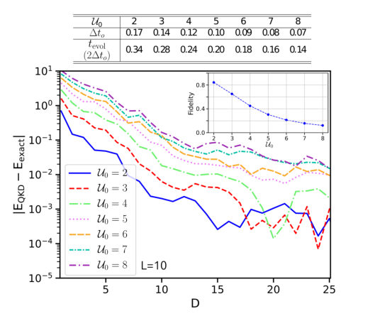
<figcaption class="paper-figure-caption"><b>Fig 5.</b> FIG. 5. Absolute GSE error as a function of the Krylov di- mension D for different on-site Coulomb interaction strengths U0 = 2–8 at fixed system size L = 10. For each value of U0, the time-evolution parameter is chosen as tevol = 2∆to (see the table at the top of the figure), with Ntrot = 200 Trotter steps. The inset shows the fidelity between the Slater-determinant reference state and the true ground state as a function of U0, illustrating the reduction in their overlap as the interaction strength increases.</figcaption>
</figure>
</div>

<p><strong>Summary.</strong> This paper evaluates Quantum Krylov Diagonalization (QKD) as a method to find ground-state energies of the 1D Hubbard model. It systematically analyzes how algorithmic choices—such as evolution time and basis truncation—affect convergence and stability. The results confirm that QKD is a viable, hardware-efficient tool for studying strongly correlated fermionic systems on current quantum processors.</p>
<p><strong>Why it may be interesting.</strong> The work provides concrete, actionable guidelines for applying advanced quantum algorithms (QKD) to benchmark strongly correlated models like the Hubbard model on near-term noisy hardware, bridging theory with experimental feasibility.</p>
<details>
<summary>Detailed structure</summary>
<p><strong>Main problem.</strong> Estimating ground-state properties of strongly correlated quantum systems, which is computationally intractable due to the exponential growth of the Hilbert space.</p>
<p><strong>Main result.</strong> Quantum Krylov Diagonalization (QKD) proves to be a practical and hardware-efficient method for studying these systems on current NISQ processors, provided algorithmic parameters are carefully balanced.</p>
<p><strong>Method.</strong> The study uses QKD, a hybrid quantum-classical approach, to estimate extremal eigenvalues by constructing and diagonalizing a projected Hamiltonian matrix derived from time evolution simulations.</p>
<p><strong>Model / system.</strong> The primary model is the one-dimensional (1D) Hubbard model with periodic boundary conditions. The system's dynamics are mapped onto qubits using the Jordan–Wigner transformation, resulting in a Hamiltonian expressed as a sum of Pauli strings.</p>
<p><strong>Key observables.</strong> Ground State Energy (GSE), spectral gap $\Delta(s)$, and the absolute GSE error ($\Delta E$) monitored against the Krylov dimension ($D$).</p>
<p><strong>Important parameters / regimes.</strong> Krylov dimension, time-evolution parameter ($   ext{tevol}$), Trotter number ($N_{    ext{trot}}$), Singular-Value Truncation (SVT) threshold, and interaction strength ($U_0$).</p>
<p><strong>Assumptions / limitations.</strong> The method relies on approximating the time evolution operator via first-order Trotterization and requires regularization (SVD) to handle near linear dependencies in the basis states.</p>
<p><strong>Figures summary.</strong> Figures illustrate the 1D Hubbard chain setup, quantum circuits for time evolution, convergence of GSE error vs. Krylov dimension/Trotter steps, and spectral gap analysis along interpolation paths.</p>
<p><strong>Paper structure.</strong> The paper systematically investigates QKD performance by analyzing its dependence on various algorithmic parameters (Krylov dimension, Trotterization) using the 1D Hubbard model. It details the mathematical framework for constructing projected matrices ($    ilde{H},    ilde{S}$) and validates the approach both through ideal simulations and actual measurements on IBM quantum hardware.</p>
</details>
<details>
<summary>Abstract</summary>
<p>Quantum Krylov diagonalization (QKD) has emerged as a promising hybrid quantum-classical approach for estimating ground-state properties of many-body systems on near-term quantum devices. In this work, we investigate the convergence, stability, and hardware performance of QKD for the one-dimensional Hubbard model with periodic boundary conditions. Building upon our previously developed low-depth Jordan--Wigner implementation, which reduces the number of two-qubit (CNOT) gates required for quantum time evolution, we perform a systematic study of the influence of the Krylov dimension, Hamiltonian evolution parameters, system size, interaction strength, and singular-value truncation (SVT) on the convergence of the method. Our results show that the performance of QKD is governed by a delicate interplay between the low-energy spectral structure of the Hamiltonian and numerical stability. In particular, systems with near-closing energy gaps require longer evolution times to efficiently resolve nearby eigenstates, while the evolution time, Krylov dimension, Trotter number, and SVT threshold must be carefully balanced to avoid numerical instabilities and accumulated time-discretization errors. This analysis provides practical guidelines for selecting algorithmic parameters in QKD. Finally, we demonstrate the algorithm on IBM quantum hardware, where the experimental results reproduce the convergence trends predicted by ideal simulations using only lightweight readout-error mitigation and a modest measurement budget. Together, these results demonstrate that QKD is a practical and hardware-efficient approach for studying strongly correlated fermionic systems on current NISQ quantum processors.</p>
</details>
<p><sub><a href="#top">↑ back to top</a></sub></p>

<p><a id="paper-2607.23952"></a></p>
<h3 id="strategies-for-quantum-enabled-bitcoin-miners"><a href="http://arxiv.org/abs/2607.23952v1">Strategies for quantum-enabled Bitcoin miners</a></h3>
<p><strong>Authors:</strong> Zach Manson, Barry C. Sanders<br>
<strong>Type:</strong> theory · <strong>Category:</strong> other · <strong>PDF:</strong> <a href="https://arxiv.org/pdf/2607.23952v1">https://arxiv.org/pdf/2607.23952v1</a><br>
<strong>Analysis basis:</strong> full PDF text, analyzed in chunks
<strong>Topic relevance:</strong> <code>quantum measurements</code> <strong>3/5</strong> · <code>measurement-induced transitions</code> <strong>2/5</strong></p>
<div class="figure-strip-hint">↔ Scroll figures horizontally</div>
<div class="paper-figures-scroll">
<figure class="paper-figure-card">
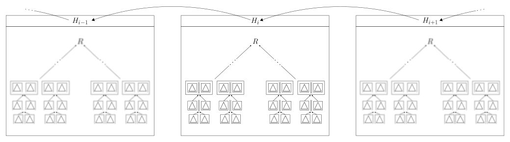
<figcaption class="paper-figure-caption"><b>Fig 1.</b> FIG. 1. The structure of a block. Blocks are depicted as squares that are partitioned into two rectangles. The upper rectangle is labeled Hi, which is the block header of the ith block, and the lower rectangle is the Merkle tree with root R. Within the Merkle tree, a triangle (△) represents the hash of an individual transaction. A square (□) represents the application of a hash function whose inputs are the contents inside the square, and || denotes concatenation. The Merkle tree construction is shown for an even number of transactions. For an odd number of transactions, the last transaction is duplicated to make the number of transactions even. The arrows between blocks represent the hash...</figcaption>
</figure>
<figure class="paper-figure-card">
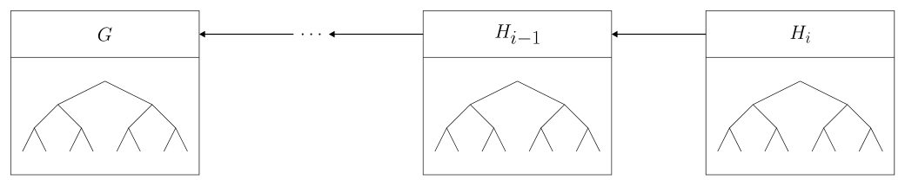
<figcaption class="paper-figure-caption"><b>Fig 2.</b> FIG. 2. The blockchain depicted as a back-linked list of blocks. Each block is shown as a square divided into two rectangles. The upper rectangle represents the block header H of the ith block, and the lower rectangle contains the Merkle tree of transactions, depicted as a tree structure. Back-links are depicted by arrows between block headers, representing the previous block hash stored in each block’s header. The ellipses denote further preceding and succeeding blocks in the blockchain, and the block with header labeled G represents the genesis block, which has no predecessor.</figcaption>
</figure>
<figure class="paper-figure-card">
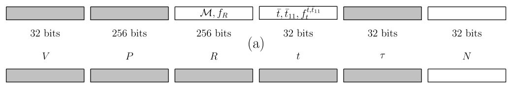
<figcaption class="paper-figure-caption"><b>Fig 3.</b> FIG. 3. A visualization of finding a proof-of-work for (a) the PoW problem and (b) the bounded PoW problem. The concatenated block header is represented by six rectangles. A rectangle represents a specific bitstring in the concatenation of the block header. Each rectangle is labeled above by the symbol of the element in the block header. The length of the bitstring for each label is indicated below the rectangle. A filled rectangle represents a bitstring whose value remains constant. An empty rectangle denotes a bitstring whose value is computed by the node finding a proof-of-work. In (a), for the Merkle Root R, the mempool M and the oracle fR are inputs, as are ¯t, ¯t11, and f ¯t,¯t11 t...</figcaption>
</figure>
<figure class="paper-figure-card">
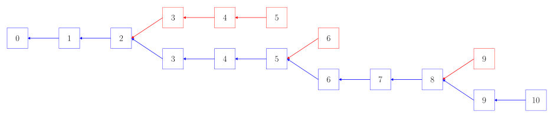
<figcaption class="paper-figure-caption"><b>Fig 4.</b> FIG. 4. The blockchain represented as a DAG during a temporary fork. A vertex (□) represents a block, each labeled with its block height. Directed edges represent the block hash of preceding blocks. A blue square (□) indicates a block that has become part of the longest blockchain. A red square (□) indicates a block that is not part of the longest blockchain. Each vertex (except the genesis block with height 0) has one outgoing edge to a preceding block, but can have multiple incoming edges from succeeding blocks during a temporary fork. This figure represents a temporary fork because not all nodes have the same symbol.</figcaption>
</figure>
<figure class="paper-figure-card">
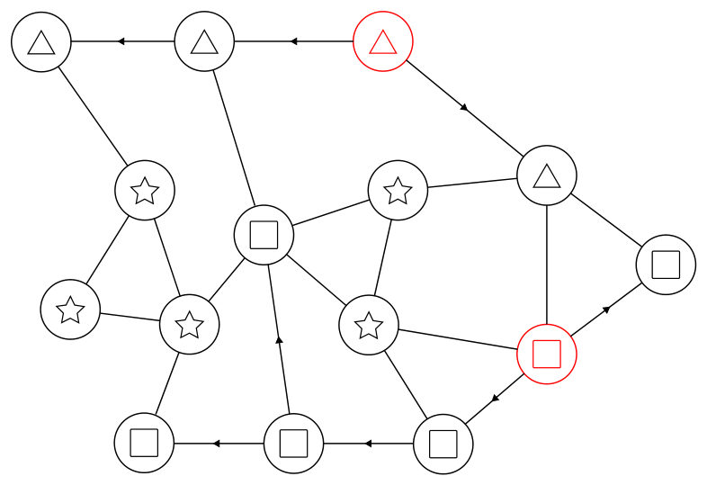
<figcaption class="paper-figure-caption"><b>Fig 5.</b> FIG. 5. A temporary fork occurring due to near-simultaneous block discovery. A vertex (⃝) represents a node in the Bitcoin network. A red vertex (⃝) represents a node that has just mined a new block. Each vertex contains either a star (⋆), representing the state of the network before the fork, or a triangle (△) or a square (□) representing one of the new branches created by the temporary fork. An arrow within an edge indicates the broadcast of a new block to a peer. An edge without an arrow represents a peer-to-peer connection where no new block is being broadcast.</figcaption>
</figure>
</div>

<p><strong>Summary.</strong> This paper analyzes the security of Bitcoin against two competing quantum miners by developing a game-theoretic model. By calculating optimal strategies that allow for multiple measurements, the authors demonstrate that these advanced quantum mining techniques do not significantly lower the network's 51% attack threshold in practice. The work is crucial for assessing future quantum threats to Proof-of-Work cryptocurrencies.</p>
<p><strong>Why it may be interesting.</strong> While not directly focused on AMO physics, the rigorous application of quantum computation concepts (like Grover's algorithm and measurement uncertainty) within a complex, real-world decentralized system provides an excellent case study for modeling open quantum systems under adversarial conditions.</p>
<details>
<summary>Detailed structure</summary>
<p><strong>Main problem.</strong> To study how two quantum-enabled Bitcoin miners affect the network's 51% attack threshold when playing a competitive game against each other.</p>
<p><strong>Main result.</strong> The optimal quantum mining strategies, even those incorporating aggressive measurements, have a negligible effect on the established 51% attack threshold of the Bitcoin network under current difficulty regimes.</p>
<p><strong>Method.</strong> The authors extended existing game-theoretic frameworks by computing payoff matrices and determining Nash equilibria for two non-colluding miners. They simulated these optimal strategies within the classical Bitcoin protocol structure.</p>
<p><strong>Model / system.</strong> The model is an otherwise classical Bitcoin network infiltrated by two aggressive quantum miners (Alice and Bob). The analysis incorporates concepts like UTXOs, SHA-256 hashing, and extends game theory to include multiple quantum measurements between block attempts.</p>
<p><strong>Key observables.</strong> The resulting threshold for the 51% attack; stale rate ($  ext{pstale}$); detection probability ($  ext{Pdet}$).</p>
<p><strong>Important parameters / regimes.</strong> Network difficulty ($D$); number of Grover iterations ($\kappa$); number of measurements ($c$).</p>
<p><strong>Assumptions / limitations.</strong> The analysis assumes the miners employ optimal strategies derived from game theory and accounts for multiple measurement opportunities, unlike prior single-computation models.</p>
<p><strong>Figures summary.</strong> Figures illustrate the structure of a Bitcoin block header and show simulated metrics like $   ext{P95}$ and $ ext{Pdet}$ as functions of network difficulty ($D$).</p>
<p><strong>Paper structure.</strong> The paper builds from defining the classical Bitcoin cryptographic model (transactions, UTXOs) to setting up a game-theoretic framework using payoff matrices for quantum mining strategies. The core analysis then simulates these optimal strategies across different difficulty regimes.</p>
</details>
<details>
<summary>Abstract</summary>
<p>We study the impact that two miners equipped with quantum computers purpose-built for quantum Bitcoin mining will have on the 51% attack threshold of the Bitcoin network, given that the miners are playing a competitive game against each other to be the first to mine a block. We extend an existing game-theoretic framework for Bitcoin mining and compute the resultant payoff matrices. From these payoff matrices, we determine optimal quantum mining strategies for two non-colluding and aggressive quantum miners with multiple opportunities at finding a valid block in an otherwise classical Bitcoin network. We show that these optimal quantum mining strategies have a negligible effect on the 51% attack threshold. The novelty of our work is the inclusion of the Aggressive Quantum Mining Strategy and the realistic approach of allowing the quantum miners to restart their search if their measurements do not yield a valid block when determining the optimal quantum mining strategies. Our result is important for evaluating quantum-mining threats on cryptocurrencies based on Proof-of-Work, e.g. Bitcoin</p>
</details>
<p><sub><a href="#top">↑ back to top</a></sub></p>

<p><a id="paper-2607.23824"></a></p>
<h3 id="the-uhlenbeck-ford-model-in-two-dimensions-reference-system-for-fluid-phase-free-energy-calculations"><a href="http://arxiv.org/abs/2607.23824v1">The Uhlenbeck-Ford model in two dimensions: Reference system for fluid-phase free-energy calculations</a></h3>
<p><strong>Authors:</strong> Samuel Cajahuaringa, Rodolfo Paula Leite, Maurice de Koning<br>
<strong>Type:</strong> theory · <strong>Category:</strong> statistical mechanics · <strong>PDF:</strong> <a href="https://arxiv.org/pdf/2607.23824v1">https://arxiv.org/pdf/2607.23824v1</a><br>
<strong>Analysis basis:</strong> full PDF text, analyzed in chunks
<strong>Topic relevance:</strong> <code>Keldysh / 2PI / non-Gaussian methods</code> <strong>3/5</strong> · <code>methods for driven-dissipative</code> <strong>1/5</strong> · <code>non-equilibrium dynamics</code> <strong>1/5</strong></p>
<div class="figure-strip-hint">↔ Scroll figures horizontally</div>
<div class="paper-figures-scroll">
<figure class="paper-figure-card">
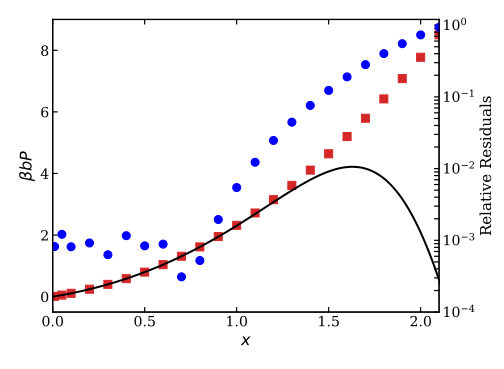
<figcaption class="paper-figure-caption"><b>Fig 1.</b> FIG. 1. Comparison of the reduced pressure as a function of the di- mensionless variable x for the 2D UF model with p = 1, as obtained from the exact virial expansion truncated after eB1 10 using the coef- ficients listed in Table I (solid line) and from MD simulations (red squares). The relative residuals are shown as blue circles. The statis- tical uncertainty of the MD averages is smaller than the symbol size over the entire range of x.</figcaption>
</figure>
<figure class="paper-figure-card">
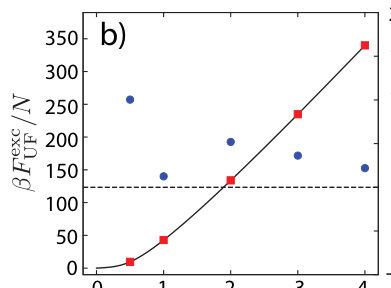
<figcaption class="paper-figure-caption"><b>Fig 2.</b> FIG. 2. a) Convergence of nonequilibrium work estimator a a func- tion of the switching time ts for p = 70 and x = 0.4 b) Comparison of the excess Helmholtz free energy as a function of the dimension- less variable x for the 2D UF model with p = 70, obtained from the cubic-spline equation of state (solid line) and the NETI results (red squares). The relative residuals are shown as blue circles. The sta- tistical uncertainty of the NETI data is smaller than the symbol size over the entire range of x.</figcaption>
</figure>
<figure class="paper-figure-card">
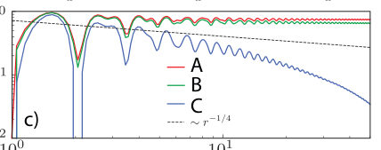
<figcaption class="paper-figure-caption"><b>Fig 3.</b> FIG. 3. a) Scaled potential energy per particle, U∗≡UUF/(Np) (top), and global translational and bond-orientational order param- eters, ΨT and Ψ6 (bottom), as functions of the effective temperature T ∗≡1/p for x = 0.5. b) Static structure factors across the melt- ing transition at three representative values of p corresponding to the points labeled A, B, and C in the potential-energy plot in panel a). c) Bond-orientational correlation functions g6(r) corresponding to the points labeled A, B, and C in the potential-energy plot in panel a). The dashed line indicates the algebraic decay g6(r) ∼r−1/4 ex- pected at the hexatic–fluid transition according to KTHNY theory.</figcaption>
</figure>
<figure class="paper-figure-card">
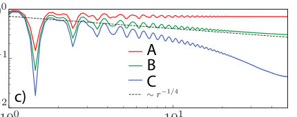
<figcaption class="paper-figure-caption"><b>Fig 4.</b> FIG. 4. a) Scaled potential energy per particle, U∗≡UUF/(Np) (top), and global translational and bond-orientational order param- eters, ΨT and Ψ6 (bottom), as functions of the effective temperature T ∗≡1/p for x = 1.0. b) Static structure factors across the melt- ing transition at three representative values of p corresponding to the points labeled A, B, and C in the potential-energy plot in panel a). c) Bond-orientational correlation functions g6(r) corresponding to the points labeled A, B, and C in the potential-energy plot in panel a). The dashed line indicates the algebraic decay g6(r) ∼r−1/4 ex- pected at the hexatic–fluid transition according to KTHNY theory.</figcaption>
</figure>
<figure class="paper-figure-card">
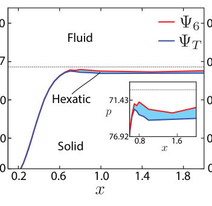
<figcaption class="paper-figure-caption"><b>Fig 5.</b> FIG. 5. Phase diagram of the two-dimensional UF model. The solid blue and red lines depict the boundaries between the solid and hex- atic and between the hexatic and fluid phases, respectively. These were obtained by visually identifying the temperatures at which ΨT and Ψ6, respectively, undergo their rapid decrease, corroborated by the evolution of the static structure factor S(k). The shaded blue re- gion indicates the hexatic phase. The horizontal black dashed line corresponds to the scaling parameter p = 70 level. The inset shows an enlarged view of the hexatic phase region.</figcaption>
</figure>
</div>

<p><strong>Summary.</strong> This paper establishes the 2D Uhlenbeck-Ford model as a robust and highly accurate reference fluid for calculating the thermodynamic properties of other two-dimensional fluids. By combining exact virial expansions with advanced free-energy techniques like Non-Equilibrium Thermodynamic Integration, the authors validate its use across various physical regimes.</p>
<p><strong>Why it may be interesting.</strong> While focused on classical fluids, the rigorous application of advanced statistical mechanics techniques like NETI for free-energy calculations provides methodological insights applicable to determining equilibrium properties in complex quantum many-body systems where direct simulation is hard.</p>
<details>
<summary>Detailed structure</summary>
<p><strong>Main problem.</strong> The study investigates using the Uhlenbeck-Ford (UF) model as a highly accurate reference system for calculating the free energy of two-dimensional (2D) fluids.</p>
<p><strong>Main result.</strong> The 2D UF model was shown to be an excellent reference fluid, accurately predicting thermodynamic properties and remaining thermodynamically stable in the fluid phase up to significant scaling parameters ($p \lesssim 70$).</p>
<p><strong>Method.</strong> The authors employed advanced statistical mechanics techniques including exact computation of virial coefficients (up to tenth order) and Non-Equilibrium Thermodynamic Integration (NETI).</p>
<p><strong>Model / system.</strong> The system analyzed is the 2D Uhlenbeck-Ford (UF) model, characterized by a specific pair potential. The methodology involves constructing an equation of state and excess Helmholtz free energy using this reference fluid.</p>
<p><strong>Key observables.</strong> Equation of State (EOS), excess Helmholtz free energy ($eta F_{exc}$), phase diagram boundaries, reduced pressure ($eta b P$), and structural order parameters ($\Psi_6$).</p>
<p><strong>Important parameters / regimes.</strong> Dimensionless density variable ($x$) and the scaling parameter $p$, which dictates stability limits.</p>
<p><strong>Assumptions / limitations.</strong> The primary approximations involve truncating the virial expansion (up to 10th order) and using NETI, whose errors are related to finite switching times.</p>
<p><strong>Figures summary.</strong> Figure 1 compares reduced pressure vs. dimensionless variable $x$ for the 2D UF model, contrasting exact virial expansions with Molecular Dynamics simulation data.</p>
<p><strong>Paper structure.</strong> The paper progresses by first establishing the accuracy of the UF model via high-order virial coefficient calculations and comparison to MD simulations. It then uses this reference system in thermodynamic integration methods (NETI) to calculate the free energy of a target fluid, validating its applicability against other theoretical models.</p>
</details>
<details>
<summary>Abstract</summary>
<p>We investigate the Uhlenbeck-Ford (UF) model as a reference system for free-energy calculations in two-dimensional (2D) fluids. The 2D virial coefficients are computed exactly up to tenth order and combined with molecular simulation data to construct highly accurate numerical representations of the equation of state and the excess Helmholtz free energy. We then determine the phase diagram of the model in order to establish the thermodynamic stability limits of the fluid phase and thereby identify the range of applicability of the UF model as a fluid reference system. In the course of this analysis, we identify the solid, hexatic, and fluid phases, and show that the fluid remains the only thermodynamically stable phase, independent of density, for scaling parameters up to $p\lesssim 70$. Finally, we demonstrate the practical applicability of the 2D UF model as a reference system through thermodynamic integration calculations of the free energy of a two-dimensional Lennard-Jones fluid.</p>
</details>
<p><sub><a href="#top">↑ back to top</a></sub></p>

<p><a id="paper-2607.24309"></a></p>
<h3 id="on-the-two-copy-distillability-of-werner-states-and-a-new-partial-trace-inequality"><a href="http://arxiv.org/abs/2607.24309v1">On the two-copy distillability of Werner states and a new partial trace inequality</a></h3>
<p><strong>Authors:</strong> Thomas C. Fraser, Felix Huber, Balázs Pozsgay, István Vona<br>
<strong>Type:</strong> theory · <strong>Category:</strong> quantum information and computing · <strong>PDF:</strong> <a href="https://arxiv.org/pdf/2607.24309v1">https://arxiv.org/pdf/2607.24309v1</a><br>
<strong>Analysis basis:</strong> full PDF text, analyzed in chunks
<strong>Topic relevance:</strong> <code>entanglement &amp; information structure</code> <strong>3/5</strong></p>
<div class="figure-strip-hint">↔ Scroll figures horizontally</div>
<div class="paper-figures-scroll">
<figure class="paper-figure-card">
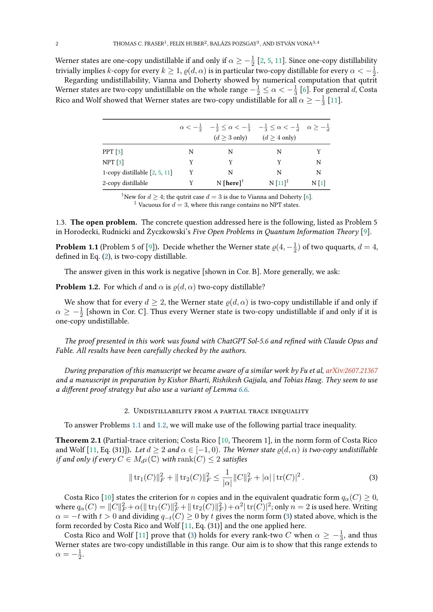
<figcaption class="paper-figure-caption"><b>Fig 1.</b> Low-resolution page preview, page 2</figcaption>
</figure>
<figure class="paper-figure-card">
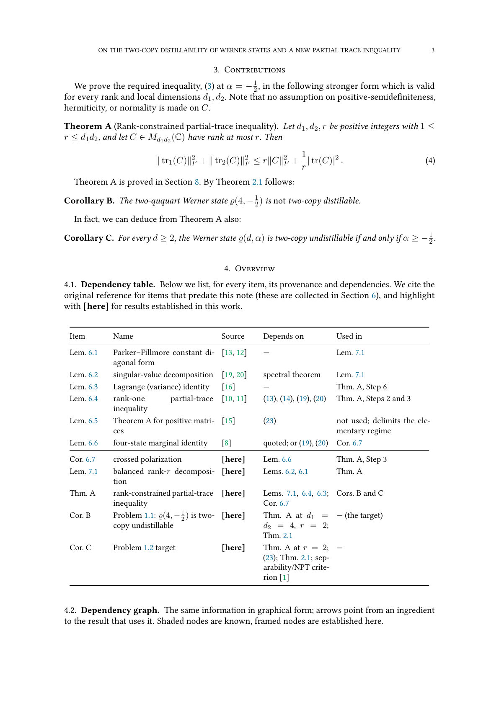
<figcaption class="paper-figure-caption"><b>Fig 2.</b> Low-resolution page preview, page 3</figcaption>
</figure>
<figure class="paper-figure-card">
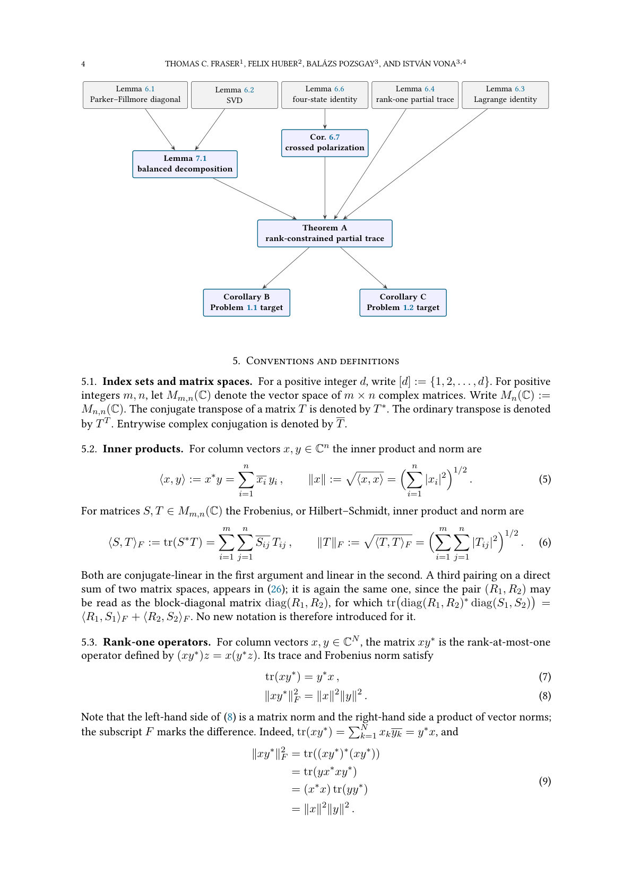
<figcaption class="paper-figure-caption"><b>Fig 3.</b> Low-resolution page preview, page 4</figcaption>
</figure>
<figure class="paper-figure-card">
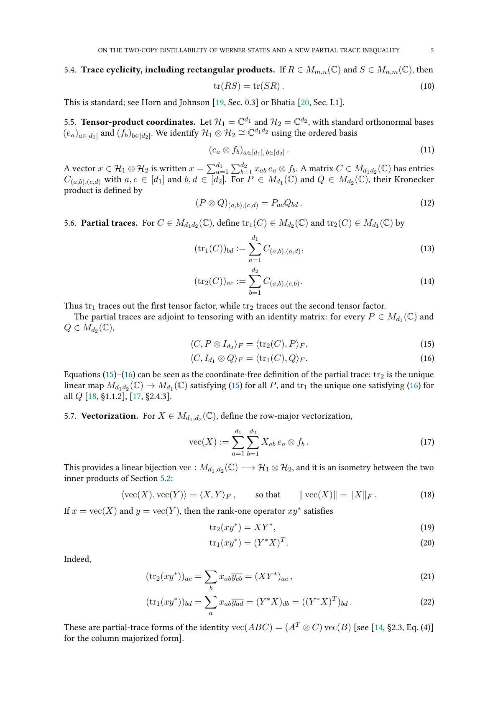
<figcaption class="paper-figure-caption"><b>Fig 4.</b> Low-resolution page preview, page 5</figcaption>
</figure>
<figure class="paper-figure-card">
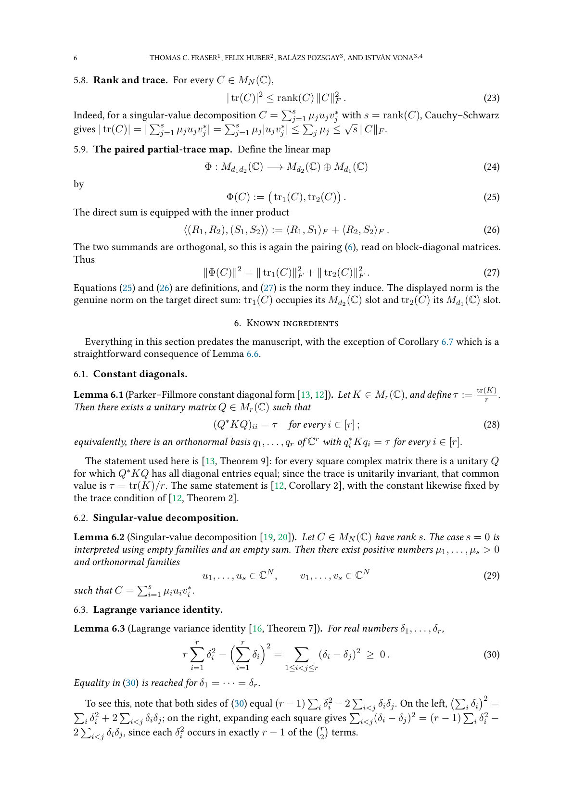
<figcaption class="paper-figure-caption"><b>Fig 5.</b> Low-resolution page preview, page 6</figcaption>
</figure>
</div>

<p><strong>Summary.</strong> The authors determine the two-copy distillability threshold for Werner states using a novel and strong partial trace inequality. They prove that $\varrho(4, -1/2)$ is undistillable and establish that this state family's one-copy and two-copy distillability regions coincide when $\alpha \ge -1/2$. This advances the understanding of entanglement measures in quantum information theory.</p>
<p><strong>Why it may be interesting.</strong> This work provides a powerful, quantitative tool—the partial trace inequality—to characterize fundamental properties (like distillability) of quantum states, which has implications across quantum information theory.</p>
<details>
<summary>Detailed structure</summary>
<p><strong>Main problem.</strong> The paper addresses the open question of determining the two-copy distillability of Werner states, specifically focusing on $\varrho(4, -1/2)$.</p>
<p><strong>Main result.</strong> They prove that $\varrho(4, -1/2)$ is not two-copy distillable and establish a general criterion: $\varrho(d, \alpha)$ is undistillable if and only if $\alpha \ge -1/2$.</p>
<p><strong>Method.</strong> The core method involves proving a strong partial trace inequality for matrices of low rank, which serves as a necessary condition for two-copy distillability.</p>
<p><strong>Model / system.</strong> The analysis centers on the Werner state $\varrho(d, \alpha) = (I + \alpha F) / (d^2 + \alpha d)$, which is a bipartite quantum state acting on two $d$-dimensional systems.</p>
<p><strong>Key observables.</strong> Two-copy distillability, partial trace norms ($\lVert 	ext{tr}_1(C) 
Vert_F$, $\lVert 	ext{tr}_2(C) 
Vert_F$), and the Frobenius norm of the matrix $C$.</p>
<p><strong>Important parameters / regimes.</strong> The dimension $d$ of the subsystems, the parameter $\alpha$ defining the state, and the rank $r$ of the matrix $C$.</p>
<p><strong>Assumptions / limitations.</strong> The results rely on proving a specific partial trace inequality for matrices whose rank is bounded by $r$, utilizing advanced linear algebra techniques like balanced decomposition.</p>
<p><strong>Paper structure.</strong> The paper builds from establishing the general rank-constrained partial-trace inequality (Theorem A) using matrix decompositions, which then allows them to apply a known criterion to settle Problem 5 regarding $\varrho(4, -1/2)$ and generalize the result for all Werner states.</p>
</details>
<details>
<summary>Abstract</summary>
<p>Problem 5 in {\it Five Open Problems in Quantum Information Theory} [PRX Quantum 3, 010101 (2022)], asks whether the two-ququart Werner state $\varrho(4,-\tfrac12)$ is two-copy distillable, where $\varrho(d,α)=(I+αF)/(d^2+αd)$. We answer it in the negative. To this end, we show the following stronger statement: for all $C\in M_{d_1d_2}(\mathbb{C})$ of rank at most $r \le d_1 d_2$, $\mathrm{tr}_1(C)\|_F^2+\|\mathrm{tr}_2(C)\|_F^2 \le r\|C\|_F^2+\frac{1}{r}|\mathrm{tr}(C)|^2$. A result by Costa Rico on the equivalence of this inequality with two-copy undistillability at $r = 2$ then settles Problem 5: $\varrho(4,-\tfrac{1}{2})$ is not two-copy distillable. Furthermore, we show that $\varrho(d,α)$ is two-copy undistillable for every $d\ge2$, if and only if $α\ge-\tfrac{1}{2}$. Thus, the one and two-copy distillability regions of $\varrho(d,α)$ coincide. These results have been found and written up with AI tools, pointing towards a structural change affecting the field of quantum information and computation.</p>
</details>
<p><sub><a href="#top">↑ back to top</a></sub></p>

<p><a id="paper-2607.23573"></a></p>
<h3 id="quantum-speed-limits-and-the-ultimate-scaling-of-the-quantum-sensors"><a href="http://arxiv.org/abs/2607.23573v1">Quantum Speed Limits and the Ultimate Scaling of the Quantum Sensors</a></h3>
<p><strong>Authors:</strong> Yusef Maleki<br>
<strong>Type:</strong> theory · <strong>Category:</strong> other · <strong>PDF:</strong> <a href="https://arxiv.org/pdf/2607.23573v1">https://arxiv.org/pdf/2607.23573v1</a><br>
<strong>Analysis basis:</strong> full PDF text, analyzed in chunks
<strong>Topic relevance:</strong> <code>analog quantum simulation</code> <strong>2/5</strong> · <code>entanglement &amp; information structure</code> <strong>2/5</strong> · <code>non-equilibrium dynamics</code> <strong>2/5</strong> · <code>quantum measurements</code> <strong>2/5</strong> · <code>Keldysh / 2PI / non-Gaussian methods</code> <strong>1/5</strong> · <code>Tavis-Cummings &amp; cavity-many-emitter</code> <strong>1/5</strong> · <code>correlated cavity matter</code> <strong>1/5</strong> · <code>driven-dissipative phase transition</code> <strong>1/5</strong> · <code>methods for driven-dissipative</code> <strong>1/5</strong> · <code>non-equilibrium universality</code> <strong>1/5</strong></p>
<div class="figure-strip-hint">↔ Scroll figures horizontally</div>
<div class="paper-figures-scroll">
<figure class="paper-figure-card">
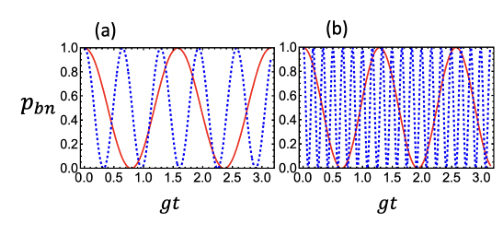
<figcaption class="paper-figure-caption"><b>Fig 1.</b> FIG. 1. Probability of finding the atom in the ground state for the initial condition |b, n⟩with n = 4 in (a) and n = 6 in (b). The solid curves correspond to the single-photon process (m = 1), while the dotted curves correspond to the four-photon process (m = 4). The faster oscillations for larger m show that higher-order multipho- ton coupling drives the system through distinguishable states more rapidly. This increased dynamical speed corresponds to a larger quantum Fisher information for time estimation and therefore sup- ports the improved time-resolution scaling δt ∝1/Ωn−m,m.</figcaption>
</figure>
</div>

<p><strong>Summary.</strong> This paper redefines the understanding of ultimate precision in quantum sensors by linking metrological bounds to fundamental quantum speed limits. It resolves apparent paradoxes in scaling laws—such as super-Heisenberg improvements—by providing a physically grounded resource accounting method. The framework successfully reconciles different scaling regimes using dynamical constraints derived from atomic/optical models.</p>
<p><strong>Why it may be interesting.</strong> This work is highly relevant as it provides a rigorous theoretical framework connecting quantum dynamics (speed limits) directly to achievable measurement precision in atomic/optical systems, which is central to modern AMO research.</p>
<details>
<summary>Detailed structure</summary>
<p><strong>Main problem.</strong> The paper aims to clarify the true scaling of precision limits (Heisenberg limit) in quantum metrology by grounding the analysis in physically derived resource accounting using quantum speed limits.</p>
<p><strong>Main result.</strong> It shows that the Heisenberg limit is an information-theoretic manifestation of the quantum speed limit, and super-resolving protocols can be reconciled by identifying the generator norm as the relevant operational resource.</p>
<p><strong>Method.</strong> The authors employ quantum speed limits (QSL) and relate metrological sensitivity to the Quantum Fisher Information (QFI), analyzing scaling laws for phase and time estimation in specific physical models.</p>
<p><strong>Model / system.</strong> The analysis uses general quantum sensing protocols, focusing on a concrete example of Rabi oscillations in two-level atoms driven by an $m$-photon resonance. The dynamics are governed by Hamiltonians involving photon number operators ($a^\dagger^2 a^2$).</p>
<p><strong>Key observables.</strong> Phase error ($\delta\varphi$), time error ($\delta t$), Quantum Fisher Information ($F_Q(t)$), and the expectation value of an observable $P$.</p>
<p><strong>Important parameters / regimes.</strong> Average photon number ($n$), resonance order ($m$), and coupling constants ($\lambda$). Scaling regimes include $\delta\varphi \propto n^{-m/2}$ and $\delta\varphi \propto 1/n$.</p>
<p><strong>Assumptions / limitations.</strong> The analysis relies on recasting metrological bounds through dynamical speed limits, assuming ideal coherent evolution for the derivation of fundamental scaling laws.</p>
<p><strong>Figures summary.</strong> Figure 1 compares probability distributions ($p_{b n}(t)$) for different multiphoton coupling orders ($m=1$ vs $m=4$) in Rabi oscillations, illustrating faster dynamics for larger $m$.</p>
<p><strong>Paper structure.</strong> The paper establishes the problem by contrasting apparent super-Heisenberg scaling with fundamental bounds. It then develops a framework using QSL and QFI to derive operational bounds, applying this to specific multiphoton resonance models before concluding on the resource identification.</p>
</details>
<details>
<summary>Abstract</summary>
<p>Quantum metrology promises sensitivity beyond classical strategies, yet it remains unsettled how quantum-enabled precision should scale with physical resources and how to interpret quantum advantage. We provide a physically grounded resource accounting that clarifies the true Heisenberg limit and resolves apparent super-Heisenberg paradoxes. We demonstrate that the Heisenberg limit is best viewed as an information-theoretic manifestation of the quantum speed limit. We illustrate these ideas with a simple, super-resolving phase-estimation protocol based on Rabi oscillations in two-level atoms driven on an $m$-photon resonance. In this setting, the phase error scales as $n^{-m/2}$, where $n$ is the average photon number. Recasting metrological sensitivity through quantum dynamical speed limits yields operational bounds that reconcile such super-resolution strategies with the standard Heisenberg interpretation and identify the relevant resources in the norm of the generator. We also revisit the common attribution of the NOON state's $1/n$ scaling to quantum entanglement. We show that such an attribution is not generic and the Heisenberg $1/n$ scaling does not, by itself, certify entanglement as the enabling resource.</p>
</details>
<p><sub><a href="#top">↑ back to top</a></sub></p>

<p><a id="paper-2607.23240"></a></p>
<h3 id="nested-integral-generator-theorem-from-operator-tautologies-to-families-of-exact-integral-identities"><a href="http://arxiv.org/abs/2607.23240v1">Nested Integral Generator Theorem: From Operator Tautologies to Families of Exact Integral Identities</a></h3>
<p><strong>Authors:</strong> Ghasem Asadi Cordshooli<br>
<strong>Type:</strong> theory · <strong>Category:</strong> quantum information and computing · <strong>PDF:</strong> <a href="https://arxiv.org/pdf/2607.23240v1">https://arxiv.org/pdf/2607.23240v1</a><br>
<strong>Analysis basis:</strong> full PDF text, analyzed in chunks
<strong>Topic relevance:</strong> <code>Tavis-Cummings &amp; cavity-many-emitter</code> <strong>2/5</strong> · <code>correlated cavity matter</code> <strong>2/5</strong> · <code>Keldysh / 2PI / non-Gaussian methods</code> <strong>1/5</strong> · <code>analog quantum simulation</code> <strong>1/5</strong> · <code>driven-dissipative phase transition</code> <strong>1/5</strong> · <code>methods for driven-dissipative</code> <strong>1/5</strong> · <code>non-equilibrium dynamics</code> <strong>1/5</strong></p>
<div class="figure-strip-hint">↔ Scroll figures horizontally</div>
<div class="paper-figures-scroll">
<figure class="paper-figure-card">
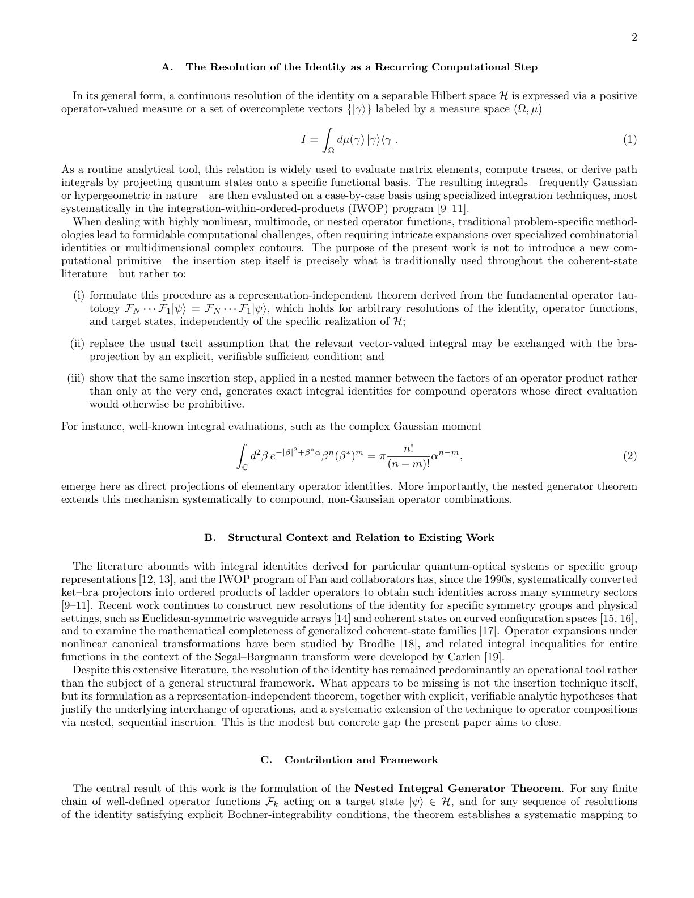
<figcaption class="paper-figure-caption"><b>Fig 1.</b> Low-resolution page preview, page 2</figcaption>
</figure>
<figure class="paper-figure-card">
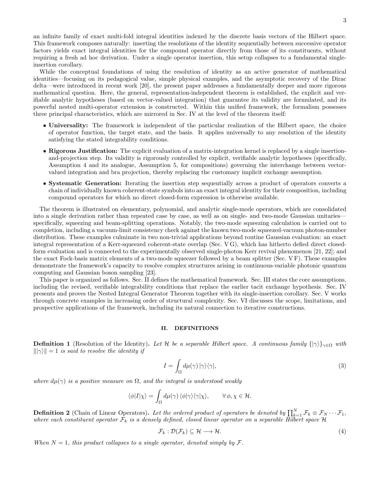
<figcaption class="paper-figure-caption"><b>Fig 2.</b> Low-resolution page preview, page 3</figcaption>
</figure>
<figure class="paper-figure-card">
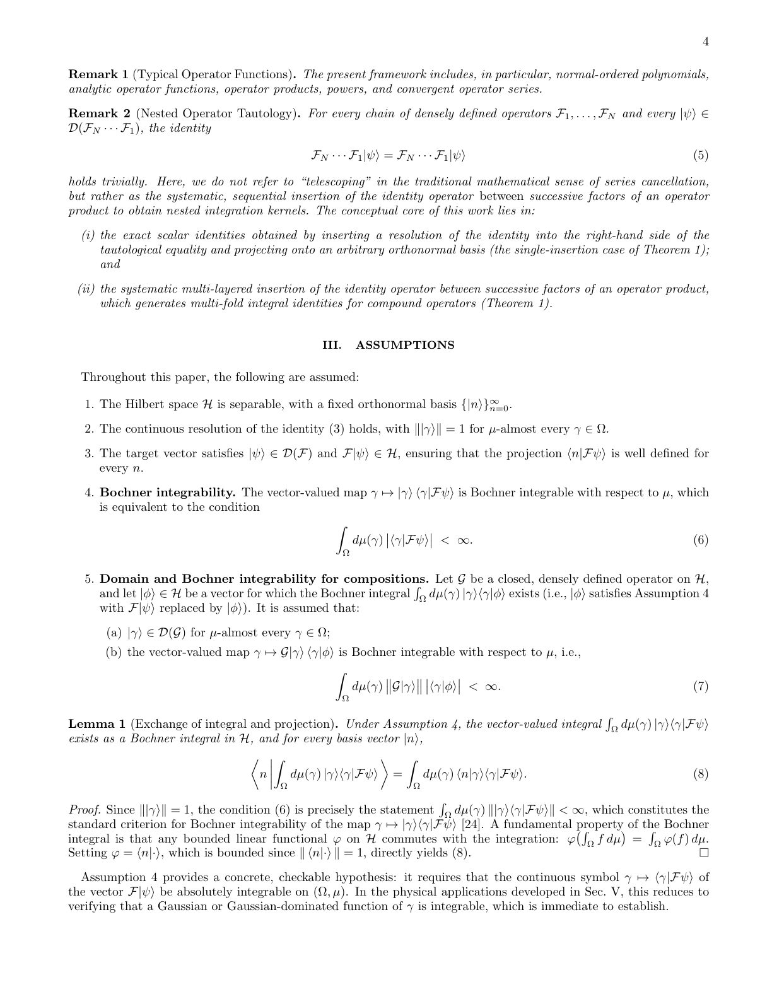
<figcaption class="paper-figure-caption"><b>Fig 3.</b> Low-resolution page preview, page 4</figcaption>
</figure>
<figure class="paper-figure-card">
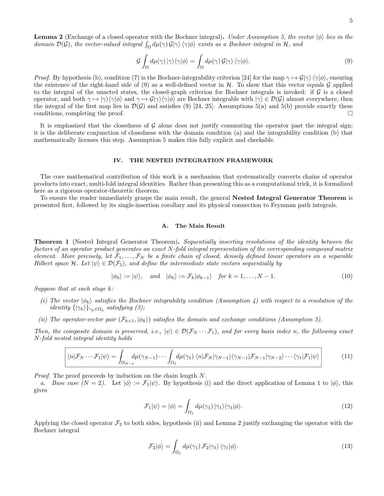
<figcaption class="paper-figure-caption"><b>Fig 4.</b> Low-resolution page preview, page 5</figcaption>
</figure>
<figure class="paper-figure-card">
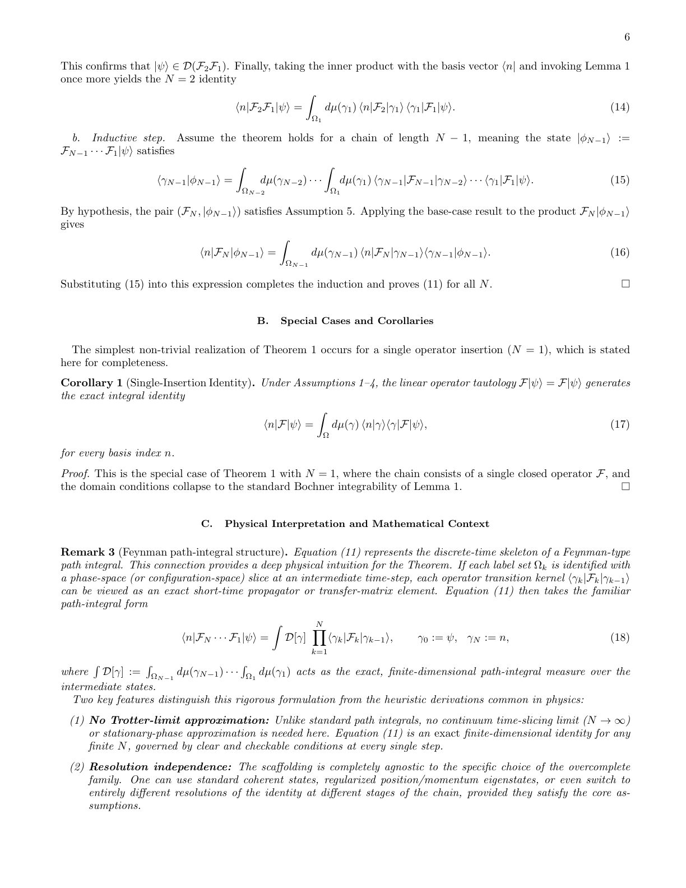
<figcaption class="paper-figure-caption"><b>Fig 5.</b> Low-resolution page preview, page 6</figcaption>
</figure>
</div>

<p><strong>Summary.</strong> This paper introduces the Nested Integral Generator Theorem, a rigorous mathematical framework to convert operator equalities into multi-fold exact integral identities. By systematically using resolutions of the identity, it provides universal tools to calculate matrix elements for complex systems in continuous-variable quantum optics, such as those involving squeezing and nonlinear Kerr interactions.</p>
<p><strong>Why it may be interesting.</strong> It provides a powerful, systematic tool that replaces potentially intractable direct calculation or approximation methods (like Trotter expansions) with exact integral formulas for complex quantum optical processes.</p>
<details>
<summary>Detailed structure</summary>
<p><strong>Main problem.</strong> To establish a rigorous, representation-independent mathematical framework for calculating complex operator compositions by systematically converting them into exact multi-fold integral identities.</p>
<p><strong>Main result.</strong> The Nested Integral Generator Theorem provides an exact $N$-fold nested integral representation for matrix elements involving chains of operators, applicable to various quantum systems.</p>
<p><strong>Method.</strong> The core method involves starting from operator tautologies and iteratively inserting continuous resolutions of the identity, utilizing vector-valued integration theory to rigorously justify the interchange of inner products with Bochner integrals.</p>
<p><strong>Model / system.</strong> The framework is applied to continuous-variable bosonic systems, including single-mode operators, two-mode Gaussian unitaries (squeezing, beam splitting), and nonlinear interactions like the Kerr effect. It provides exact calculations for matrix elements $\langle n| \mathcal{O} | \alpha, \lambda 
angle$.</p>
<p><strong>Key observables.</strong> Exact integral representations of operator functions, such as the overlap between a Kerr-squeezed coherent state and Fock states, and two-mode Gaussian network matrix elements.</p>
<p><strong>Important parameters / regimes.</strong> Squeezing parameters ($\zeta$), beam-splitter angles ($\varphi$), Kerr nonlinearity strength ($\chi$), and photon number ($n, m$).</p>
<p><strong>Assumptions / limitations.</strong> The primary assumptions involve the existence of a continuous resolution of the identity and meeting verifiable sufficient conditions (Bochner integrability) to interchange integration and projection operators.</p>
<p><strong>Figures summary.</strong> Not specified in detail, but the notes reference specific equations (e.g., Eq. 18 for path integral analogy, Eq. 48 for compound network result, Eq. 53 for Kerr overlap).</p>
<p><strong>Paper structure.</strong> The paper builds from general operator tautologies to the Nested Integral Generator Theorem (Theorem 1), providing specific applications to Gaussian unitaries and nonlinear systems, culminating in explicit matrix element calculations.</p>
</details>
<details>
<summary>Abstract</summary>
<p>Inserting resolutions of the identity is a standard technique for representing states and operators throughout quantum theory, quantum field theory, and related areas of mathematical physics. This paper elevates this procedure to a rigorous, representation-independent framework through the Nested Integral Generator Theorem. Starting from operator tautologies, the theorem systematically generates exact multi-fold integral identities by successive insertions of continuous resolutions of the identity followed by projection onto arbitrary orthonormal basis vectors. The resulting construction applies to arbitrary finite compositions of closed operators acting on arbitrary target states and establishes a general mapping from operator equalities to families of exact integral identities. Using the theory of vector-valued integration, explicit and verifiable sufficient conditions are derived under which inner products may be interchanged rigorously with Bochner integrals, thereby placing a step that is often left implicit in the physics literature on a firm mathematical foundation. As an immediate consequence, the theorem yields exact integral representations for individual operator functions. Its scope is illustrated through elementary, polynomial, and analytic single-mode operators, as well as single- and two-mode Gaussian unitaries, including squeezing and beam splitting. The framework is further applied to two nontrivial examples beyond standard Gaussian calculations: an exact integral representation of a Kerr-squeezed coherent-state overlap and exact Fock-basis matrix elements for a composite two-mode Gaussian network expressed in terms of bivariate Hermite polynomials.</p>
</details>
<p><sub><a href="#top">↑ back to top</a></sub></p>

<p><a id="paper-2607.24445"></a></p>
<h3 id="finite-precision-algebraic-quantum-field-theory"><a href="http://arxiv.org/abs/2607.24445v1">Finite-Precision Algebraic Quantum Field Theory</a></h3>
<p><strong>Authors:</strong> Abbas Edalat<br>
<strong>Type:</strong> theory · <strong>Category:</strong> other · <strong>PDF:</strong> <a href="https://arxiv.org/pdf/2607.24445v1">https://arxiv.org/pdf/2607.24445v1</a><br>
<strong>Analysis basis:</strong> full PDF text, analyzed in chunks
<strong>Topic relevance:</strong> <code>measurement-induced transitions</code> <strong>2/5</strong> · <code>quantum measurements</code> <strong>2/5</strong> · <code>Keldysh / 2PI / non-Gaussian methods</code> <strong>1/5</strong> · <code>correlated / nonlocal dissipation</code> <strong>1/5</strong> · <code>driven-dissipative phase transition</code> <strong>1/5</strong> · <code>entanglement &amp; information structure</code> <strong>1/5</strong></p>
<div class="figure-strip-hint">↔ Scroll figures horizontally</div>
<div class="paper-figures-scroll">
<figure class="paper-figure-card">
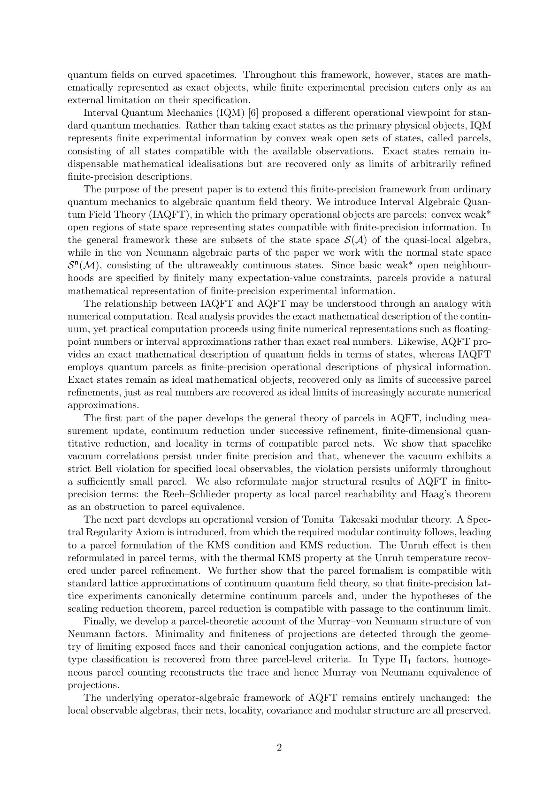
<figcaption class="paper-figure-caption"><b>Fig 1.</b> Low-resolution page preview, page 2</figcaption>
</figure>
<figure class="paper-figure-card">
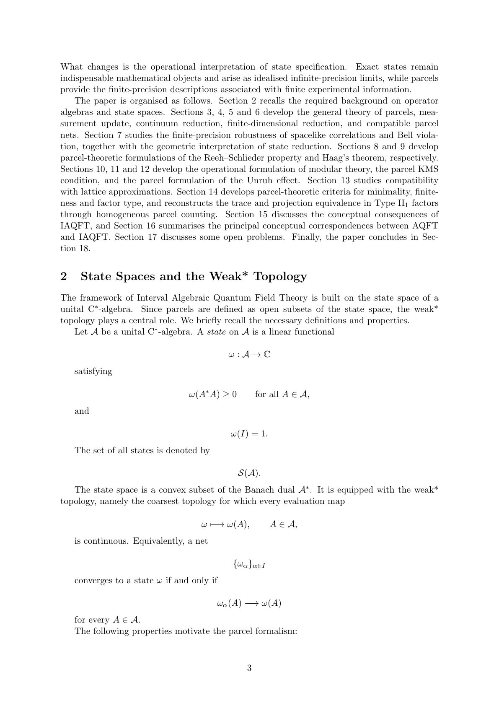
<figcaption class="paper-figure-caption"><b>Fig 2.</b> Low-resolution page preview, page 3</figcaption>
</figure>
<figure class="paper-figure-card">
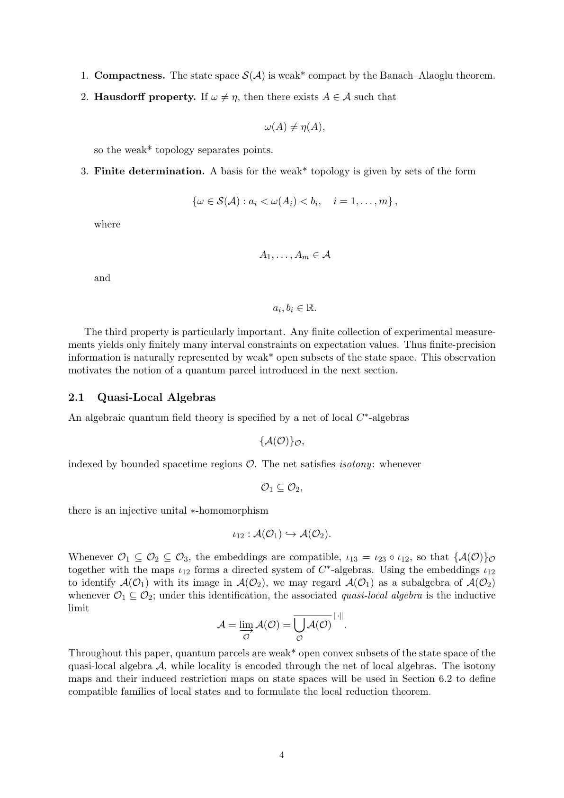
<figcaption class="paper-figure-caption"><b>Fig 3.</b> Low-resolution page preview, page 4</figcaption>
</figure>
<figure class="paper-figure-card">
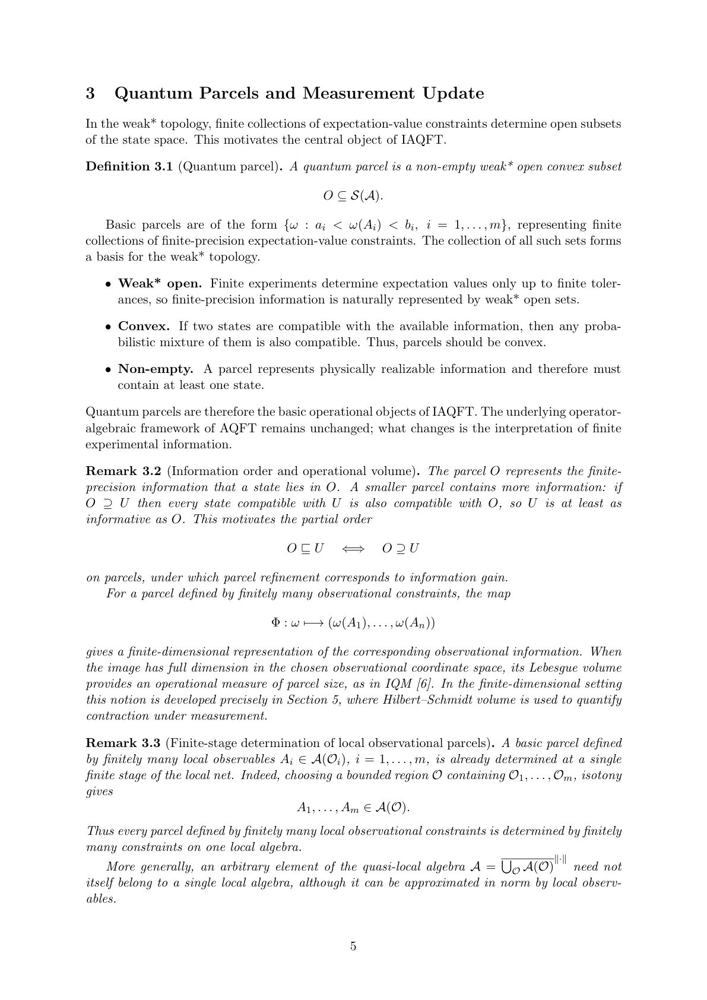
<figcaption class="paper-figure-caption"><b>Fig 4.</b> Low-resolution page preview, page 5</figcaption>
</figure>
<figure class="paper-figure-card">
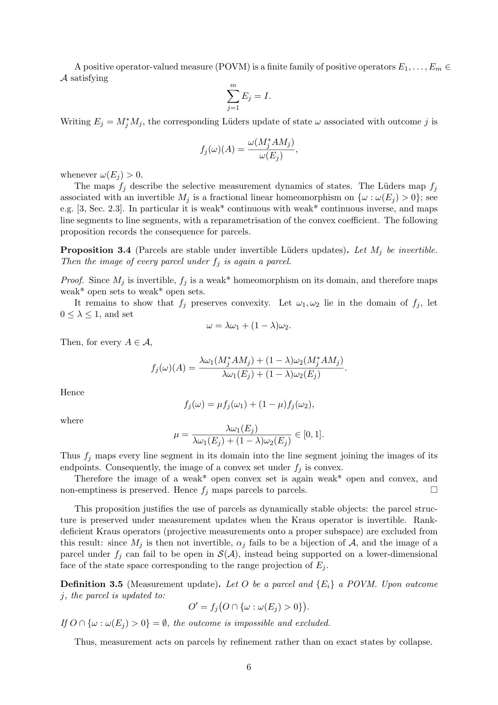
<figcaption class="paper-figure-caption"><b>Fig 5.</b> Low-resolution page preview, page 6</figcaption>
</figure>
</div>

<p><strong>Summary.</strong> This paper develops Interval Algebraic Quantum Field Theory (IAQFT) by replacing exact mathematical states with 'quantum parcels,' which represent finite-precision information from local measurements. It successfully reformulates core concepts of relativistic quantum theory—such as modular structure and vacuum correlations—within this operational, finite-precision framework. This provides a unified theoretical tool for modeling QFT under realistic measurement constraints.</p>
<p><strong>Why it may be interesting.</strong> For a theoretical physicist working on open quantum systems or many-body dynamics, IAQFT offers a formal way to incorporate inherent measurement limitations and computational constraints directly into the fundamental structure of QFT, moving beyond idealized continuous mathematics.</p>
<details>
<summary>Detailed structure</summary>
<p><strong>Main problem.</strong> The central problem is extending Algebraic Quantum Field Theory (AQFT) from exact mathematical descriptions to a rigorous framework capable of handling finite-precision information derived from physical measurements.</p>
<p><strong>Main result.</strong> The authors introduce Interval AQFT (IAQFT), which successfully recasts major structural features of relativistic quantum theory—including modular theory and the Unruh effect—into terms involving 'quantum parcels' that encode finite precision.</p>
<p><strong>Method.</strong> The methodology involves replacing exact states with weak* open convex regions called 'quantum parcels,' developing procedures for parcel reduction, and establishing connections between these operational objects and deep mathematical structures of operator algebras.</p>
<p><strong>Model / system.</strong> The theory applies to relativistic quantum field theory, formulated using the algebraic approach (AQFT) based on a net of local $C^*$-algebras indexed by spacetime regions. The core mathematical machinery involves analyzing state spaces under the weak* topology.</p>
<p><strong>Key observables.</strong> Spacelike vacuum correlations, Bell violations, and structural properties like the Reeh–Schlieder property are key diagnostics that must persist under finite precision.</p>
<p><strong>Important parameters / regimes.</strong> The framework is defined by the geometry of quantum parcels (weak* open convex regions) and their evolution via measurement updates or refinement processes.</p>
<p><strong>Assumptions / limitations.</strong> The theory assumes that exact states remain as indispensable ideal limits, recovered only through increasingly refined sequences of finite-precision parcels. The structure relies heavily on the weak* topology and its finite determination property.</p>
<p><strong>Paper structure.</strong> The paper builds by first defining quantum parcels to replace exact states in AQFT. It then develops operational procedures like parcel reduction and measurement updates, showing how these preserve key physical features (like vacuum correlations). Finally, it connects this finite-precision framework to deep mathematical results concerning the classification of von Neumann factors.</p>
</details>
<details>
<summary>Abstract</summary>
<p>Recent work introduced Interval Quantum Mechanics (IQM), a finite-precision framework in which physical information is represented by sets of possible states rather than exact states. We extend this approach to algebraic quantum field theory (AQFT) by introducing Interval Algebraic Quantum Field Theory (IAQFT), whose basic objects are quantum parcels: weak* open convex regions of state space encoding finite-precision information obtained from finitely many local observations.   We develop parcel reduction and measurement update, establish finite-dimensional information-contraction results, and formulate locality through compatible parcel nets. Major structural features of AQFT are recast in parcel-theoretic terms, including the Reeh--Schlieder property, Haag's theorem, modular theory, the KMS condition, and the Unruh effect. We show that spacelike vacuum correlations and strict Bell violations persist under finite precision, and that lattice approximations are compatible with the parcel framework. Finally, we recover the Murray--von Neumann classification of factors together with the trace and projection equivalence in Type~$\mathrm{II}_1$ factors from the geometry of limiting parcels. IAQFT thus provides a unified finite-precision formulation of the operational, modular, and operator-algebraic structures of relativistic quantum theory.</p>
</details>
<p><sub><a href="#top">↑ back to top</a></sub></p>

<p><a id="paper-2607.23641"></a></p>
<h3 id="optimal-dynamic-cooling-of-multiple-qubits"><a href="http://arxiv.org/abs/2607.23641v1">Optimal Dynamic Cooling of Multiple Qubits</a></h3>
<p><strong>Authors:</strong> Mattia Reda, Massimiliano Sacchi, Chiara Macchiavello, Giacomo Guarnieri<br>
<strong>Type:</strong> theory · <strong>Category:</strong> statistical mechanics · <strong>PDF:</strong> <a href="https://arxiv.org/pdf/2607.23641v1">https://arxiv.org/pdf/2607.23641v1</a><br>
<strong>Analysis basis:</strong> full PDF text, analyzed in chunks
<strong>Topic relevance:</strong> <code>non-equilibrium dynamics</code> <strong>2/5</strong> · <code>analog quantum simulation</code> <strong>1/5</strong> · <code>correlated / nonlocal dissipation</code> <strong>1/5</strong> · <code>driven-dissipative phase transition</code> <strong>1/5</strong> · <code>entanglement &amp; information structure</code> <strong>1/5</strong> · <code>methods for driven-dissipative</code> <strong>1/5</strong> · <code>non-equilibrium universality</code> <strong>1/5</strong></p>
<div class="figure-strip-hint">↔ Scroll figures horizontally</div>
<div class="paper-figures-scroll">
<figure class="paper-figure-card">
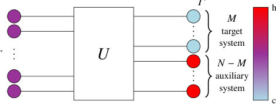
<figcaption class="paper-figure-caption"><b>Fig 1.</b> FIG. 1: Dynamic cooling of 𝑀target qubits. A global unitary 𝑈acts on 𝑁identical qubits initially at temperature 𝑇, cooling the targets to a common temperature 𝑇′ while transferring entropy and energy to the remaining 𝑁−𝑀ancillary qubits.</figcaption>
</figure>
<figure class="paper-figure-card">

<figcaption class="paper-figure-caption"><b>Fig 2.</b> Figure 1 summarizes the setting: a global unitary redis- tributes energy and entropy between the 𝑀targets and the re- maining 𝑁−𝑀qubits. We now formulate the corresponding spectral optimization. Consider 𝑁identical, noninteracting qubits with single-qubit Hamiltonian</figcaption>
</figure>
<figure class="paper-figure-card">

<figcaption class="paper-figure-caption"><b>Fig 3.</b> FIG. 2: Complex-Hadamard correction for two targets. The unitary 𝑈sym = 1 ⊕𝐹2 ⊕1 acts only on the target-weight-one subspace span{|01⟩, |10⟩}. It replaces the two diagonal ancillary blocks by their average and may create the coherence block 𝐶, while preserving every sector probability and the total energy.</figcaption>
</figure>
<figure class="paper-figure-card">

<figcaption class="paper-figure-caption"><b>Fig 4.</b> FIG. 3: Block structure induced by target Hamming weight. Sector 𝑤contains 𝑀 𝑤  target strings, each labeling an ancillary block of dimension 2𝑁−𝑀. The passive rearrangement fills these sectors in increasing 𝑤.</figcaption>
</figure>
<figure class="paper-figure-card">

<figcaption class="paper-figure-caption"><b>Fig 5.</b> FIG. 5: Minimum permutation work 𝑊min perm/ℏ𝜔for 2 ≤𝑀≤𝑁≤10 at 𝑃1 = 0.4. The smaller spectral bias near 𝑃1 = 1/2 reduces the work required by the passive rearrangement.</figcaption>
</figure>
</div>

<p><strong>Summary.</strong> This paper develops a comprehensive theory for optimally cooling multiple qubits by treating the system as a single closed unit. It proves that a global unitary transformation achieves the lowest possible target temperature, outperforming parallel cooling strategies. The methodology involves spectral analysis and combinatorial constraints to determine when simpler, permutation-based protocols can match this theoretical optimum.</p>
<p><strong>Why it may be interesting.</strong> This work provides rigorous theoretical tools to analyze resource optimization in quantum thermodynamics, specifically quantifying how collective coupling (global unitary) improves energy extraction compared to independent local operations, which is highly relevant for designing efficient quantum refrigerators or thermalization protocols.</p>
<details>
<summary>Detailed structure</summary>
<p><strong>Main problem.</strong> The paper addresses the closed-system problem of optimally cooling $M$ target qubits selected from a larger pool of $N$ identical thermal qubits to achieve the lowest common local temperature allowed by unitarity.</p>
<p><strong>Main result.</strong> A universal optimal protocol exists that achieves the minimum possible mean target energy, and this global strategy strictly outperforms parallel single-target cooling methods. The analysis also provides exact criteria for when simpler permutation-only protocols suffice.</p>
<p><strong>Method.</strong> The authors combine spectral analysis of the initial state with optimization techniques to derive an optimal unitary transformation ($U_*$) composed of a passive rearrangement and a complex-Hadamard correction. They use graph theory concepts (hypergraph coloring) to analyze feasibility conditions for permutations.</p>
<p><strong>Model / system.</strong> The system consists of $N$ identical, noninteracting qubits initially prepared in a Gibbs state $
ho(eta)$. The cooling process is modeled as the evolution under a global unitary transformation acting on this register.</p>
<p><strong>Key observables.</strong> Local target temperature, mean target energy ($p_\star(P_1)$), and the cooling curve depth ($\xi_M^\star$).</p>
<p><strong>Important parameters / regimes.</strong> $N$ (total qubits), $M$ (target qubits), initial inverse temperature $eta$, and the ratio of global vs. parallel cooling performance.</p>
<p><strong>Assumptions / limitations.</strong> The analysis assumes the system remains closed, and while a complex-Hadamard correction is optimal, alternative permutation realizations are analyzed for implementation simplicity.</p>
<p><strong>Figures summary.</strong> Figures illustrate dynamic cooling protocols using global unitaries on $N$ qubits to cool $M$ targets; they also show resource allocation diagrams comparing global vs. parallel target populations for specific $(N, M)$ pairs.</p>
<p><strong>Paper structure.</strong> The paper first establishes the optimal protocol via two steps (passive rearrangement and Hadamard correction). It then derives necessary and sufficient arithmetic criteria for achieving this optimum using only permutations, classifying feasibility islands. Finally, it provides quantitative bounds on the achievable cooling depth by comparing global vs. parallel strategies.</p>
</details>
<details>
<summary>Abstract</summary>
<p>We solve the closed-system problem of cooling $M$ qubits, selected from $N$ identical thermal qubits, to the lowest common local temperature allowed by unitarity. The optimal protocol consists of two conceptually distinct steps. First, a passive rearrangement assigns the largest eigenvalues of the initial state to target sectors of lowest Hamming weight, thereby minimizing the total target energy. Second, a target-only complex-Hadamard transformation within each fixed-Hamming-weight subspace equalizes the one-qubit target marginals without changing any target-sector probability or the total energy. Consequently, imposing a common local temperature costs neither cooling depth nor additional work: the constrained optimum coincides with the unconstrained passive minimum for every $N>M$ and every initial temperature. The complex-Hadamard correction may nevertheless be costly at the circuit level. We therefore derive an exact arithmetic criterion for when the same optimum can be attained by a temperature-independent computational-basis permutation alone, and exhaustively classify the resulting finite-size islands of feasibility for $M+2\leq N\leq 128$. At isolated temperatures, further optimal permutations can arise through numerical cancellations between different thermal eigenvalue shells. These alternative realizations may reduce implementation complexity, but they cannot improve the cooling curve already attained by the universal protocol. We also derive the exact cooling curve, prove that at least two ancillary qubits are necessary and sufficient for nontrivial cooling, and show that joint many-target cooling can strictly outperform parallel single-target strategies.</p>
</details>
<p><sub><a href="#top">↑ back to top</a></sub></p>

<p><a id="paper-2607.22852"></a></p>
<h3 id="bias-preserving-cat-cat-cnot-gate-via-vacuum-conditional-beam-splitter"><a href="http://arxiv.org/abs/2607.22852v1">Bias-preserving cat-cat CNOT gate via vacuum-conditional beam-splitter</a></h3>
<p><strong>Authors:</strong> Yufeng, Ye, Connor T. Hann, Kyungjoo Noh, Harald Putterman, Ron Belyansky, Arne L. Grimsmo, Oskar Painter<br>
<strong>Type:</strong> theory · <strong>Category:</strong> quantum information and computing · <strong>PDF:</strong> <a href="https://arxiv.org/pdf/2607.22852v1">https://arxiv.org/pdf/2607.22852v1</a><br>
<strong>Analysis basis:</strong> full PDF text, analyzed in chunks
<strong>Topic relevance:</strong> <code>QC/QI experiment</code> <strong>2/5</strong> · <code>correlated / nonlocal dissipation</code> <strong>1/5</strong> · <code>correlated cavity matter</code> <strong>1/5</strong> · <code>driven-dissipative phase transition</code> <strong>1/5</strong> · <code>methods for driven-dissipative</code> <strong>1/5</strong> · <code>quantum optics experiment</code> <strong>1/5</strong></p>
<div class="figure-strip-hint">↔ Scroll figures horizontally</div>
<div class="paper-figures-scroll">
<figure class="paper-figure-card">

<figcaption class="paper-figure-caption"><b>Fig 1.</b> Figure 1. Conditional SWAP2 realizes bias-preserving cat- cat CNOT. (a) Bloch sphere of the cat qubit. To remain bias-preserving, an X gate must leave the two-dimensional code space — its trajectory (colored arcs) exits the Bloch- sphere surface into the larger oscillator Hilbert space, rather than crossing the unprotected equator on the surface. (b) Ex- isting X gates rotate the cat in phase space via a frequency shift Hamiltonian λˆa†ˆa. (c) Proposed X gate SWAPs the cat (target mode ˆat) in and out of an auxiliary bin mode (ˆb) via a beam-splitter Hamiltonian g(ˆb†ˆat + ˆb ˆa† t), complet- ing a SWAP2 geometric phase gate (Sec. S-I E of [34]). (d) Schematic of the proposed CNOT gate: A...</figcaption>
</figure>
<figure class="paper-figure-card">

<figcaption class="paper-figure-caption"><b>Fig 2.</b> Figure 2. Echo techniques for gate error suppression. (a) χ- echo pulse sequence: The cross-Kerr coupling χ (green) flips sign at the gate midpoint while two π/2 beam-splitter pulses |g| (orange) execute the conditional SWAP2. (b)–(d) Phase- space diagrams for the control, bin, and target modes. In (b), the OFF-state control |2αc⟩acquires a cross-Kerr phase ±χˆnb that is refocused by the χ-echo. In (c), the χ-echo is invisible to the ON branch (control in vacuum has no cross-Kerr shift); the bin still returns to vacuum after the complete SWAP2 cy- cle. In (d), the target cat acquires a g2/ ¯∆AC Stark phase in the OFF branch, which is also refocused by the χ-echo. (e) Full gate protocol with...</figcaption>
</figure>
<figure class="paper-figure-card">

<figcaption class="paper-figure-caption"><b>Fig 3.</b> Figure 3. VCB gate performance. Each panel tracks one error channel versus |α|2 (= |αc|2 = |αt|2): (a) control OFF bit-flip, (b) target ON bit-flip, (c) target OFF bit-flip, (d) control phase-flip, and (e) target phase-flip. Successive curves cumulatively add imperfections. Blue: Ideal Hamiltonian (cross-Kerr + beam-splitter + χ-echo + DRAG, vacuum initial states). Orange: Adds thermal population (¯nth = 10−4) to both control and bin (negligible for target). Green: Adds self-Kerr on all three modes (Ka = Kb = Kt = χ/1000) with displacement echo on the control phase-flip channel. Red dashed: Adds single-photon loss (T1 = 1 ms) analytically—target phase-flip via (1 −e−2¯nTCX/T1)/2, control...</figcaption>
</figure>
<figure class="paper-figure-card">

<figcaption class="paper-figure-caption"><b>Fig 4.</b> Figure 4. Repetition code performance with the VCB gate (elementary SWAP duration TSWAP = 50 ns). (a) Physical layout: data cats (green), ancilla cats (blue), and a single shared bin mode (pink diamond) per ancilla in a linear chain. (b) Logical error per syndrome cycle versus code distance d for ¯n = 6, 8, and 10 at T1 = 1 ms (solid) and T1 = 250 µs (dashed). (c) Logical error per cycle at d = 11 as a function of ¯n and T1. Parameters: χ/2π = 4 MHz, σ = 0.22, ¯nth = 10−4, ¯na = 8. See Sec. S-XII of [34] for pulse-shaping details.</figcaption>
</figure>
</div>

<p><strong>Summary.</strong> The paper presents a novel, unitary scheme to implement bias-preserving CNOT and Toffoli gates on cat qubits. By leveraging vacuum-conditional interactions mediated by cross-Kerr nonlinearities, the authors overcome limitations associated with dissipation-based gate schemes. This breakthrough enables fault-tolerant quantum computation by maintaining exponential suppression of bit-flip errors.</p>
<p><strong>Why it may be interesting.</strong> This work is highly relevant as it tackles fundamental resource limitations in superconducting quantum computing platforms by providing a theoretically robust method for implementing multi-qubit gates while maintaining crucial noise protection mechanisms.</p>
<details>
<summary>Detailed structure</summary>
<p><strong>Main problem.</strong> The core challenge is implementing logical quantum gates, specifically CNOT and Toffoli, on cat qubits while preserving the inherent exponential suppression of bit-flip errors (noise bias). Existing methods often rely on engineered dissipation, which introduces limitations.</p>
<p><strong>Main result.</strong> The authors propose a unitary, vacuum-conditional gate scheme that successfully preserves the noise bias for both CNOT and extends it to a universal Toffoli gate. This allows for logical memory with error rates below $10^{-6}$ using repetition codes.</p>
<p><strong>Method.</strong> The gates are realized using controlled interactions involving cross-Kerr nonlinearities ($\chi$) and beam-splitter drives ($g$). Error suppression is achieved through echo sequences (e.g., displacement echoes) to mitigate coherent phase-flip errors.</p>
<p><strong>Model / system.</strong> The system utilizes cat qubits, which are stabilized by engineered two-photon loss. The gate mechanism involves coupling the control, target, and an auxiliary 'bin' mode via these nonlinear interactions.</p>
<p><strong>Key observables.</strong> Bit-flip error probabilities ($p_X$) and phase-flip error probabilities ($p_Z$); logical error rates ($    ext{error} &lt; 10^{-6}$).</p>
<p><strong>Important parameters / regimes.</strong> Cat size parameter $|\alpha|^2$, interaction strengths ($\chi, g$), and the coherence time $T_1 = 1 	ext{ ms}$.</p>
<p><strong>Assumptions / limitations.</strong> Assumes good component lifetimes and precise nonlinearity engineering; the gate speed is limited by coupling strengths rather than dissipation rates.</p>
<p><strong>Figures summary.</strong> Figures illustrate the Bloch sphere representation of X gates, the schematic setup using cross-Kerr/beam-splitter interactions for CNOT, and phase-space diagrams detailing echo sequences used for error suppression.</p>
<p><strong>Paper structure.</strong> The paper first introduces the bias problem in cat qubits. It details the unitary CNOT gate mechanism (Chunk 1), followed by a rigorous analysis of error channels using echo techniques (Chunk 2). Finally, it extends this methodology to implement the universal Toffoli ($ ext{CCX}$) gate (Chunk 3).</p>
</details>
<details>
<summary>Abstract</summary>
<p>Cat qubits can exhibit strong noise bias due to their exponentially enhanced bit-flip times and only polynomially reduced phase-flip times with increasing photon number, which makes them attractive candidates for hardware-efficient quantum error correction. However, it is difficult to maintain this strong noise bias in logical operations such as CNOT gates between cats. Here, we propose a coherent CNOT gate scheme between two dissipative cats that preserves the exponential noise bias. The proposed gate relies only on unitary operations, which avoids the non-idealities associated with many existing gate schemes that rely on engineered dissipations. Assuming good component lifetimes and precise nonlinearity engineering, the proposed gate can enable logical memory in the megaquop regime (logical error rates &lt; 10^-6) with a distance-7 repetition code consisting of 13 cat qubits.</p>
</details>
<p><sub><a href="#top">↑ back to top</a></sub></p>

<p><a id="paper-2607.23569"></a></p>
<h3 id="a-probabilistic-representation-for-multi-state-discrete-time-quantum-walks"><a href="http://arxiv.org/abs/2607.23569v1">A Probabilistic Representation for Multi-State Discrete-time Quantum Walks</a></h3>
<p><strong>Authors:</strong> Hoang Vu<br>
<strong>Type:</strong> theory · <strong>Category:</strong> other · <strong>PDF:</strong> <a href="https://arxiv.org/pdf/2607.23569v1">https://arxiv.org/pdf/2607.23569v1</a><br>
<strong>Analysis basis:</strong> full PDF text, analyzed in chunks
<strong>Topic relevance:</strong> <code>non-equilibrium dynamics</code> <strong>2/5</strong> · <code>Keldysh / 2PI / non-Gaussian methods</code> <strong>1/5</strong> · <code>analog quantum simulation</code> <strong>1/5</strong> · <code>driven-dissipative phase transition</code> <strong>1/5</strong> · <code>methods for driven-dissipative</code> <strong>1/5</strong></p>
<div class="figure-strip-hint">↔ Scroll figures horizontally</div>
<div class="paper-figures-scroll">
<figure class="paper-figure-card">

<figcaption class="paper-figure-caption"><b>Fig 1.</b> Fig. 1. The Hadamard walk’s probability distribution for n = 10, α = 1 √</figcaption>
</figure>
<figure class="paper-figure-card">

<figcaption class="paper-figure-caption"><b>Fig 2.</b> Fig. 2. The three-state quantum walk’s probability distribution with the coin C = eiλg2 for n = 10, α = 1 √</figcaption>
</figure>
<figure class="paper-figure-card">

<figcaption class="paper-figure-caption"><b>Fig 3.</b> Fig. 3. The three-state quantum walk’s spacetime behavior with the coin C = eiλg2 for n = 10, α = 1 √</figcaption>
</figure>
<figure class="paper-figure-card">

<figcaption class="paper-figure-caption"><b>Fig 4.</b> Figure 2 and 3 show the distribution of the walk via unitary evolution and its spacetime behavior.</figcaption>
</figure>
<figure class="paper-figure-card">

<figcaption class="paper-figure-caption"><b>Fig 5.</b> Fig. 4. The three-state quantum walk’s probability distribution with the coin C = eiλg2 for n = 10, α = 1 √</figcaption>
</figure>
</div>

<p><strong>Summary.</strong> This paper develops a novel probabilistic framework to simulate multi-state discrete-time quantum walks. By mapping the quantum evolution onto classical stochastic processes driven by Poisson variables, the authors rigorously prove that these walks converge in the continuum limit to solutions of coupled Dirac partial differential equations. This offers a scalable theoretical alternative for analyzing complex quantum dynamics using classical methods.</p>
<p><strong>Why it may be interesting.</strong> This work provides a powerful, non-unitary classical tool (stochastic processes) to analyze complex quantum dynamics, offering potential computational advantages for simulating higher-dimensional or multi-state quantum systems where direct unitary simulation is hard.</p>
<details>
<summary>Detailed structure</summary>
<p><strong>Main problem.</strong> The core problem is constructing a rigorous probabilistic representation for multi-state discrete-time quantum walks (QWs) on lattices.</p>
<p><strong>Main result.</strong> The authors successfully demonstrate that this classical stochastic process converges to the continuum solution of coupled linear Dirac partial differential equations in the limit.</p>
<p><strong>Method.</strong> They derive the probabilistic formulation by mapping the unitary quantum evolution onto a system driven by independent Poisson random variables, followed by a continuous rescaling limit.</p>
<p><strong>Model / system.</strong> The model is a multi-state discrete-time Quantum Walk on an integer lattice, generalized from two to three states using Gell-Mann matrices for the coin operator. The dynamics are governed by unitary evolution operators.</p>
<p><strong>Key observables.</strong> Probability amplitudes ($\alpha, eta, \gamma$) and the limiting probability density function $\Psi(t, z, y)$ that solves the Dirac PDEs.</p>
<p><strong>Important parameters / regimes.</strong> The number of states (3), the coin matrix $C$ (e.g., $e^{i\lambda g_k}$), and the continuum limit parameter ($\epsilon 	o 0$).</p>
<p><strong>Assumptions / limitations.</strong> The analysis relies on establishing weak convergence using Poisson processes to bridge the gap between discrete quantum evolution and continuous PDE solutions.</p>
<p><strong>Figures summary.</strong> Figures compare simulation results for various coins (Hadamard, Grover) showing both unitary evolution benchmarks against the derived probabilistic representation in spacetime plots.</p>
<p><strong>Paper structure.</strong> The paper progresses from reviewing the two-state case to extending the construction using Gell-Mann matrices for three states. It then rigorously derives the Poisson process formulation and finally establishes the convergence of this discrete walk to a set of coupled Dirac PDEs via rescaling.</p>
</details>
<details>
<summary>Abstract</summary>
<p>Building upon the pioneering framework of Vu (2026), we construct a probabilistic representation for three-state discrete-time quantum walks on integer lattices and validate it through empirical examples. Furthermore, we establish that this representation converges to the continuum solution of multi-state Dirac partial differential equations. Broadly, our findings demonstrate that this probabilistic paradigm serves as a robust alternative for simulating higher-dimensional quantum walks, opening new theoretical avenues to analyze quantum dynamics using classical stochastic processes.</p>
</details>
<p><sub><a href="#top">↑ back to top</a></sub></p>

<p><a id="paper-2607.23450"></a></p>
<h3 id="a-strong-converse-for-stabilizer-codes-over-pauli-channels-via-the-blowing-up-lemma"><a href="http://arxiv.org/abs/2607.23450v1">A strong converse for stabilizer codes over Pauli channels via the blowing-up lemma</a></h3>
<p><strong>Authors:</strong> Marco Tomamichel<br>
<strong>Type:</strong> theory · <strong>Category:</strong> quantum information and computing · <strong>PDF:</strong> <a href="https://arxiv.org/pdf/2607.23450v1">https://arxiv.org/pdf/2607.23450v1</a><br>
<strong>Analysis basis:</strong> full PDF text, analyzed in chunks
<strong>Topic relevance:</strong> <code>entanglement &amp; information structure</code> <strong>2/5</strong> · <code>Keldysh / 2PI / non-Gaussian methods</code> <strong>1/5</strong> · <code>correlated / nonlocal dissipation</code> <strong>1/5</strong> · <code>driven-dissipative phase transition</code> <strong>1/5</strong> · <code>methods for driven-dissipative</code> <strong>1/5</strong></p>
<div class="figure-strip-hint">↔ Scroll figures horizontally</div>
<div class="paper-figures-scroll">
<figure class="paper-figure-card">

<figcaption class="paper-figure-caption"><b>Fig 1.</b> Low-resolution page preview, page 2</figcaption>
</figure>
<figure class="paper-figure-card">

<figcaption class="paper-figure-caption"><b>Fig 2.</b> Low-resolution page preview, page 3</figcaption>
</figure>
<figure class="paper-figure-card">

<figcaption class="paper-figure-caption"><b>Fig 3.</b> Low-resolution page preview, page 4</figcaption>
</figure>
<figure class="paper-figure-card">

<figcaption class="paper-figure-caption"><b>Fig 4.</b> Low-resolution page preview, page 5</figcaption>
</figure>
<figure class="paper-figure-card">

<figcaption class="paper-figure-caption"><b>Fig 5.</b> Low-resolution page preview, page 6</figcaption>
</figure>
</div>

<p><strong>Summary.</strong> This work proves a strong converse for the quantum capacity of stabilizer codes under Pauli noise. By leveraging the blowing-up lemma and avoiding common mathematical assumptions, it rigorously shows that exceeding the coherent information rate leads to exponentially decaying fidelity. This advances fundamental understanding of error correction limits in quantum communication.</p>
<p><strong>Why it may be interesting.</strong> It provides rigorous, non-asymptotic bounds on quantum channel capacity that do not rely on standard assumptions like additivity or semidefinite programming, which are foundational tools in open quantum systems theory.</p>
<details>
<summary>Detailed structure</summary>
<p><strong>Main problem.</strong> The paper aims to prove a strong converse for quantum communication capacity when using stabilizer codes over Pauli noise channels.</p>
<p><strong>Main result.</strong> It establishes that if the transmission rate exceeds the coherent information, the entanglement fidelity must decay exponentially with block length, providing a strong bound on achievable rates.</p>
<p><strong>Method.</strong> The proof employs the blowing-up lemma from classical probability theory and reduces the quantum problem to an entropic accounting argument involving side information derived from decoding success events.</p>
<p><strong>Model / system.</strong> The system models quantum communication using stabilizer codes subjected to memoryless Pauli channels, analyzed asymptotically over large block lengths (n).</p>
<p><strong>Key observables.</strong> Entanglement Fidelity ($F$), Coherent Information ($   ext{Ic}$), and the rate of information transmission.</p>
<p><strong>Important parameters / regimes.</strong> Pauli error probability ($p$) for the depolarizing channel; the exponent $\gamma$ defining the excess rate over capacity.</p>
<p><strong>Assumptions / limitations.</strong> The proof relies on the structure of stabilizer codes and crucially excludes the possibility of two-way classical assistance.</p>
<p><strong>Figures summary.</strong> Not specified (Notes focus on mathematical arguments rather than figure descriptions).</p>
<p><strong>Paper structure.</strong> The paper develops the converse by first relating optimal fidelity to measure theory via the blowing-up lemma, then using side information derived from decoding success events to constrain the achievable rate through an entropic bound.</p>
</details>
<details>
<summary>Abstract</summary>
<p>We prove a strong converse for quantum communication over Pauli channels within the class of stabilizer codes. If a code whose code space is a full joint eigenspace of a stabilizer group transmits above the coherent information of its own input state, its entanglement fidelity decays exponentially in the block length; the encoder may be any isometry onto that space and the decoder any channel. For memoryless channels this determines the $\varepsilon$-quantum capacity of the class for every $\varepsilon < 1$, so that tolerating a constant error buys no rate; for antidegradable channels, such as the depolarizing channel with error probability $p \in [1/4, 3/4]$, that capacity is zero, while for $p \in [1/4,1/2)$ partial-transposition bounds provably cannot certify a strong converse. The proof uses neither additivity assumptions nor semidefinite relaxations: optimal decoding succeeds precisely on an event in a product probability space, so the blowing-up lemma of Ahlswede, Gács and Körner applies, and the side information it produces is charged against the coherent information. The argument also constrains near-deterministic decoding for codes of any kind, and we isolate the encoder-side statement that would extend it to all of them.</p>
</details>
<p><sub><a href="#top">↑ back to top</a></sub></p>

<p><a id="paper-2607.24557"></a></p>
<h3 id="entanglement-distillation-and-swapping-scheduling-in-quantum-repeaters-with-noisy-memories"><a href="http://arxiv.org/abs/2607.24557v1">Entanglement Distillation and Swapping Scheduling in Quantum Repeaters with Noisy Memories</a></h3>
<p><strong>Authors:</strong> Siddharth Chander, Xinan Chen, Allen Zang<br>
<strong>Type:</strong> theory · <strong>Category:</strong> quantum information and computing · <strong>PDF:</strong> <a href="https://arxiv.org/pdf/2607.24557v1">https://arxiv.org/pdf/2607.24557v1</a><br>
<strong>Analysis basis:</strong> full PDF text, analyzed in chunks
<strong>Topic relevance:</strong> <code>entanglement &amp; information structure</code> <strong>2/5</strong> · <code>correlated / nonlocal dissipation</code> <strong>1/5</strong> · <code>driven-dissipative phase transition</code> <strong>1/5</strong> · <code>methods for driven-dissipative</code> <strong>1/5</strong> · <code>non-equilibrium dynamics</code> <strong>1/5</strong></p>
<div class="figure-strip-hint">↔ Scroll figures horizontally</div>
<div class="paper-figures-scroll">
<figure class="paper-figure-card">

<figcaption class="paper-figure-caption"><b>Fig 1.</b> Fig. 2. The expected fidelity ¯F for one-hop strategies with λ = 10/s and τ = 0.1, 1, 100 s.</figcaption>
</figure>
<figure class="paper-figure-card">

<figcaption class="paper-figure-caption"><b>Fig 2.</b> Fig. 3. The success probability Pr(success) for one-hop strategies with λ = 10/s and τ = 0.1, 1, 100 s.</figcaption>
</figure>
<figure class="paper-figure-card">

<figcaption class="paper-figure-caption"><b>Fig 3.</b> Fig. 4. The weighted coherent information R for one-hop strategies with λ = 10/s and τ = 0.1, 1, 100 s.</figcaption>
</figure>
<figure class="paper-figure-card">

<figcaption class="paper-figure-caption"><b>Fig 4.</b> Fig. 5. (a) Distribution of final fidelities for Distill-ALAP (mean ¯F ≈0.780, standard deviation ≈0.048) and Discard-Oldest (mean ¯F = 0.776, standard deviation 0.056) at fixed parameters (λ = 1.0 s−1, τ = 10.0 s, T = 2.0 s, 105 attempted samples). (b) Distribution of coherent information conditioned on Ic &gt; 0 at the same parameters. Of 105 attempted samples, 20,681 (Distill- ALAP) and 27,507 (Discard-Oldest) successful outputs have positive Ic.</figcaption>
</figure>
<figure class="paper-figure-card">

<figcaption class="paper-figure-caption"><b>Fig 5.</b> Fig. 6. The expected fidelity ¯F for two-hop strategies with λ = 10/s and τ = 0.1, 1, 100 s.</figcaption>
</figure>
</div>

<p><strong>Summary.</strong> This paper analyzes the scheduling of entanglement distillation and swapping operations in quantum repeaters whose memories suffer from decoherence. By comparing timing strategies like 'ASAP' versus 'ALAP', the authors determine that the optimal protocol shifts depending on the memory coherence time. The findings provide essential, physics-grounded insights into designing robust quantum communication links.</p>
<p><strong>Why it may be interesting.</strong> It provides concrete, quantitative guidelines on how decoherence fundamentally alters optimal resource management strategies in quantum communication architectures, which is crucial for designing practical quantum networks.</p>
<details>
<summary>Detailed structure</summary>
<p><strong>Main problem.</strong> The work aims to elucidate the fundamental trade-offs induced by memory decoherence on the optimal timing and ordering of entanglement distillation and swapping in quantum repeater networks.</p>
<p><strong>Main result.</strong> Optimal strategies depend critically on the coherence time ($  au$): 'Discard-Oldest' is best for low $    au$, while delaying final distillation ('Distill-ALAP') maximizes weighted coherent information for high $  au$.</p>
<p><strong>Method.</strong> The authors use analytical derivations for one-hop links and Monte Carlo simulations for two-hop chains to compare various timing protocols.</p>
<p><strong>Model / system.</strong> The system models quantum repeaters using elementary building blocks (one-hop and two-hop chains) where entangled states are stored in noisy quantum memories subject to depolarizing noise.</p>
<p><strong>Key observables.</strong> Expected output fidelity, overall success probability, and weighted coherent information ($R_S$).</p>
<p><strong>Important parameters / regimes.</strong> Memory coherence time ($    au$), initial state fidelity ($F_0$), and the arrival rate of entangled pairs ($\lambda$).</p>
<p><strong>Assumptions / limitations.</strong> The analysis assumes multiplexed repeater chains and focuses on depolarization noise, neglecting gate or measurement errors.</p>
<p><strong>Figures summary.</strong> Figures compare expected fidelity, success probability, and weighted coherent information for various one-hop strategies across different coherence time regimes.</p>
<p><strong>Paper structure.</strong> The paper first analyzes the minimal one-hop setting analytically, comparing ASAP vs. ALAP distillation timing. It then extends this analysis to two-hop repeater chains using Monte Carlo simulations to compare complex sequencing protocols.</p>
</details>
<details>
<summary>Abstract</summary>
<p>Entanglement distillation and entanglement swapping have been extensively studied assuming perfect quantum memories. However, near-term quantum networks will be fundamentally limited by quantum memories with a finite coherence time, resulting in complex choices for the timing and ordering of these operations. In this work, we study entanglement distillation and entanglement swapping at the level of the elementary building blocks of noisy quantum repeater networks, with the goal of elucidating the fundamental tradeoffs induced by memory decoherence. First, we focus on a minimal one-hop setting, where we analytically compare <code>distill-as-soon-as-possible'' and</code>distill-as-late-as-possible'' strategies against a baseline strategy that simply discards the older entangled state. We find that in the low memory coherence time regime, discarding the older entangled state achieves higher expected output fidelity, while in the high coherence time regime, delaying distillation until the end achieves the highest expected output fidelity and, over most of the deadline range, the highest weighted coherent information, at the expense of a lower success probability. We then extend our analysis to two-hop repeater chains using Monte Carlo simulation. In this setting, we find that the highest weighted coherent information is achieved by strategies that defer distillation to the end of the time window, with \textsf{Distill-ALAP-then-Swap-ALAP} and \textsf{Swap-ASAP-then-Distill-ALAP} leading at different operating points, while \textsf{Discard-Oldest-then-Swap} never reaches positive weighted coherent information in any regime tested. Together, these results clarify how decoherence reshapes the optimal operation timing in quantum networks and provide instructive insights into the link-level principles that govern larger-scale architectures.</p>
</details>
<p><sub><a href="#top">↑ back to top</a></sub></p>

<p><a id="paper-2607.24693"></a></p>
<h3 id="quantum-incapacity-beyond-no-cloning-and-ppt-mechanisms"><a href="http://arxiv.org/abs/2607.24693v1">Quantum Incapacity beyond No-Cloning and PPT Mechanisms</a></h3>
<p><strong>Authors:</strong> Chengkai Zhu, Xin Wang<br>
<strong>Type:</strong> theory · <strong>Category:</strong> quantum information and computing · <strong>PDF:</strong> <a href="https://arxiv.org/pdf/2607.24693v1">https://arxiv.org/pdf/2607.24693v1</a><br>
<strong>Analysis basis:</strong> full PDF text, analyzed in chunks
<strong>Topic relevance:</strong> <code>entanglement &amp; information structure</code> <strong>2/5</strong> · <code>Keldysh / 2PI / non-Gaussian methods</code> <strong>1/5</strong> · <code>correlated / nonlocal dissipation</code> <strong>1/5</strong> · <code>driven-dissipative phase transition</code> <strong>1/5</strong> · <code>methods for driven-dissipative</code> <strong>1/5</strong></p>
<div class="figure-strip-hint">↔ Scroll figures horizontally</div>
<div class="paper-figures-scroll">
<figure class="paper-figure-card">

<figcaption class="paper-figure-caption"><b>Fig 1.</b> Low-resolution page preview, page 2</figcaption>
</figure>
<figure class="paper-figure-card">

<figcaption class="paper-figure-caption"><b>Fig 2.</b> Low-resolution page preview, page 3</figcaption>
</figure>
<figure class="paper-figure-card">

<figcaption class="paper-figure-caption"><b>Fig 3.</b> Low-resolution page preview, page 4</figcaption>
</figure>
<figure class="paper-figure-card">

<figcaption class="paper-figure-caption"><b>Fig 4.</b> Low-resolution page preview, page 5</figcaption>
</figure>
<figure class="paper-figure-card">

<figcaption class="paper-figure-caption"><b>Fig 5.</b> Low-resolution page preview, page 6</figcaption>
</figure>
</div>

<p><strong>Summary.</strong> The paper introduces a novel qutrit quantum channel that achieves zero private and quantum capacities without being Positive under Partial Transposition or antidegradable. By employing advanced tools like signed lifts and relative entropy comparisons, the authors resolve long-standing open problems by demonstrating that capacity vanishing can occur outside these standard structural bounds.</p>
<p><strong>Why it may be interesting.</strong> This work provides a powerful counterexample that challenges existing structural theorems in quantum information theory, suggesting that capacity limitations can arise from mechanisms beyond those previously assumed (PPT or antidegradability).</p>
<details>
<summary>Detailed structure</summary>
<p><strong>Main problem.</strong> To construct an explicit quantum channel that exhibits zero private and quantum capacities despite not satisfying standard structural conditions like being Positive under Partial Transposition (PPT) or antidegradable.</p>
<p><strong>Main result.</strong> The authors present a qutrit channel demonstrating $P(\Lambda)=Q(\Lambda)=0$ while proving it is neither PPT nor antidegradable, thus expanding the known mechanisms for capacity vanishing.</p>
<p><strong>Method.</strong> The proof utilizes advanced techniques involving signed lifts, relative entropy comparisons (complete less-noisy order), and constructing explicit witness operators to test structural properties like antidegradability.</p>
<p><strong>Model / system.</strong> The study focuses on a specific qutrit channel $\Lambda_{A	o B}$ acting on finite-dimensional quantum systems. The analysis involves tensor products of these channels across multiple blocklengths ($n$).</p>
<p><strong>Key observables.</strong> Quantum Capacity ($Q(\Lambda)$), Private Capacity ($P(\Lambda)$), PPT property, Antidegradability, and the relative entropy $D(
ho\|\sigma)$.</p>
<p><strong>Important parameters / regimes.</strong> The channel is defined on qutrit systems ($\mathbb{C}^3$). The results hold for every tensor power of the channel.</p>
<p><strong>Assumptions / limitations.</strong> The core proof relies on establishing an information ordering (the complete less-noisy order) via a signed lift and demonstrating that this order forces the vanishing of capacities.</p>
<p><strong>Figures summary.</strong> Not specified, but the notes reference mathematical derivations involving structural decompositions, defect maps, and inequalities proving capacity bounds.</p>
<p><strong>Paper structure.</strong> The paper first introduces the problem by defining the specific channel. It then establishes a general information ordering criterion ($\preceq_{	ext{cRE}}$) using signed lifts and relative entropy comparisons. Finally, it applies these tools to the concrete channel to prove zero capacities while explicitly violating PPT and antidegradability conditions.</p>
</details>
<details>
<summary>Abstract</summary>
<p>We show an explicit qutrit channel whose private and quantum capacities both vanish, although it is neither antidegradable nor positive under partial transposition (PPT). This resolves two longstanding open problems in quantum information theory: whether zero quantum capacity can occur outside the PPT and antidegradable classes, and whether antidegradability is the only nontrivial mechanism that forces the private capacity to vanish. For qutrit systems $A$ and $B$, the channel is \[ Λ_{A\to B}(X)= \frac{1}{2}X+\frac{1}{4}\left(\operatorname{Tr}(X)\mathbb{1}_{B}-X^{\mathsf T} \right). \] We prove that, for every tensor power and every finite-dimensional quantum reference system, the complementary output dominates the receiver output in relative entropy. Consequently, we show that the optimized private and coherent information vanish at every blocklength, and hence $P(Λ)=Q(Λ)=0$. The proof uses a nonpositive, adjoint-preserving signed lift whose weighted defect admits an exact rank-three completely positive factorization. Applying established Bogoliubov--Kubo--Mori/relative-entropy comparison results and complete less-noisy tensorization results then yields the stated order at every tensor power, leading to zero quantum and private capacities. Meanwhile, we show that the channel is neither PPT nor antidegradable. The channel therefore realizes exact quantum and private incapacity beyond the standard PPT-based bound-entanglement mechanism and the no-cloning mechanism.</p>
</details>
<p><sub><a href="#top">↑ back to top</a></sub></p>

<p><a id="paper-2607.23820"></a></p>
<h3 id="unified-framework-for-bidirectional-and-cyclic-teleportation-under-noise"><a href="http://arxiv.org/abs/2607.23820v1">Unified Framework for Bidirectional and Cyclic Teleportation under Noise</a></h3>
<p><strong>Authors:</strong> Soubhik De, Vedhanayagi R, Basherrudin Mahmud Ahmed A, Alok Sharan<br>
<strong>Type:</strong> theory · <strong>Category:</strong> quantum information and computing · <strong>PDF:</strong> <a href="https://arxiv.org/pdf/2607.23820v1">https://arxiv.org/pdf/2607.23820v1</a><br>
<strong>Analysis basis:</strong> full PDF text, analyzed in chunks
<strong>Topic relevance:</strong> <code>quantum measurements</code> <strong>2/5</strong> · <code>correlated / nonlocal dissipation</code> <strong>1/5</strong> · <code>driven-dissipative phase transition</code> <strong>1/5</strong> · <code>entanglement &amp; information structure</code> <strong>1/5</strong> · <code>methods for driven-dissipative</code> <strong>1/5</strong></p>
<div class="figure-strip-hint">↔ Scroll figures horizontally</div>
<div class="paper-figures-scroll">
<figure class="paper-figure-card">

<figcaption class="paper-figure-caption"><b>Fig 1.</b> Fig. 1: Schematic diagram depicting the bidirectional teleportation of arbitrary three-qubit states via a twelve-qubit entangled state. UA and UB represent the unitary operations to be done by Alice and Bob respectively, and dashed arrows represent classical communication.</figcaption>
</figure>
<figure class="paper-figure-card">

<figcaption class="paper-figure-caption"><b>Fig 2.</b> Fig. 2: Fidelity as a function of noise parameter p and input parameter a under the influence of the Bit-flip noise channel for the (a) 3 ⇔3 Bidirectional teleportation protocol and (b) 2 ⇔2 ⇔2 Cyclic teleportation protocol. The value of parameters b = c = 1 √</figcaption>
</figure>
<figure class="paper-figure-card">

<figcaption class="paper-figure-caption"><b>Fig 3.</b> Fig. 3: Fidelity as a function of noise parameter p and input parameter a under the influence of the Phase-flip noise channel for the (a) 3 ⇔3 Bidirectional teleportation protocol and (b) 2 ⇔2 ⇔2 Cyclic teleportation protocol. The value of parameters b = c = 1 √</figcaption>
</figure>
<figure class="paper-figure-card">

<figcaption class="paper-figure-caption"><b>Fig 4.</b> Fig. 4: Fidelity as a function of noise parameter p and input parameter a under the influence of the Amplitude-damping noise channel for the (a) 3 ⇔3 Bidirectional teleportation protocol and (b) 2 ⇔2 ⇔2 Cyclic teleportation protocol. The value of parameters b = c = 1 √</figcaption>
</figure>
<figure class="paper-figure-card">

<figcaption class="paper-figure-caption"><b>Fig 5.</b> Fig. 5: Fidelity as a function of noise parameter p and input parameter a under the influence of the Phase-damping noise channel for the (a) 3 ⇔3 Bidirectional teleportation protocol and (b) 2 ⇔2 ⇔2 Cyclic teleportation protocol. The value of parameters b = c = 1 √</figcaption>
</figure>
</div>

<p><strong>Summary.</strong> This paper presents a unified framework using a single twelve-qubit entangled resource to achieve both bidirectional and cyclic quantum teleportation. The authors demonstrate the protocols' scalability and analyze their performance under various noise models, showing that the bidirectional scheme is remarkably robust against bit-flip errors.</p>
<p><strong>Why it may be interesting.</strong> The rigorous analysis of multi-party quantum communication channels under realistic noise conditions is highly relevant for developing robust quantum networks and understanding decoherence effects in complex quantum information tasks.</p>
<details>
<summary>Detailed structure</summary>
<p><strong>Main problem.</strong> The work aims to develop a unified quantum communication framework capable of supporting both bidirectional and cyclic teleportation using a single, shared entangled resource.</p>
<p><strong>Main result.</strong> A twelve-qubit entangled channel was shown to enable the bidirectional teleportation of three-qubit states and cyclic teleportation of two-qubit states. The protocol maintains perfect fidelity under bit-flip noise for the bidirectional case while achieving an intrinsic efficiency of 25%.</p>
<p><strong>Method.</strong> The authors utilize local Bell-state measurements (BSM) on a pre-established multi-qubit entangled channel and apply subsequent single-qubit operations to reconstruct the unknown quantum state.</p>
<p><strong>Model / system.</strong> The core model is a twelve-qubit entangled resource ($\vert G_{12} 
angle$) used to facilitate communication between multiple parties. The protocols are analyzed by subjecting them to various noise channels, including amplitude-damping and depolarizing noise.</p>
<p><strong>Key observables.</strong> Teleportation Fidelity (as a function of input state parameters and noise strength $p$), intrinsic efficiency, and the final collapsed quantum state after measurements.</p>
<p><strong>Important parameters / regimes.</strong> Noise strengths ($p$) for various channels (amplitude-damping, bit-flip, etc.), and the number of qubits involved in the teleportation tasks (3-qubit states, 2-qubit cycles).</p>
<p><strong>Assumptions / limitations.</strong> The analysis assumes the ability to perform local Bell-state measurements and single-qubit operations on the shared entangled resource.</p>
<p><strong>Figures summary.</strong> Figure 1 schematically illustrates bidirectional teleportation ($A \leftrightarrow B \leftrightarrow C$), and Figure 2 plots the fidelity of both bidirectional and cyclic protocols against the noise parameter $p$.</p>
<p><strong>Paper structure.</strong> The paper first introduces the problem, then details the construction of the twelve-qubit channel. It proceeds to derive the mathematical steps for the three-qubit bidirectional and cyclic teleportation protocols using BSMs. Finally, it analyzes the performance of these schemes under various noise models.</p>
</details>
<details>
<summary>Abstract</summary>
<p>Quantum teleportation has evolved from single-qubit, unidirectional communication to multi-qubit and multidirectional protocols. However, most existing schemes rely on protocol-specific entangled resources, motivating the development of universal quantum channels capable of supporting multiple communication tasks simultaneously. In this work, we demonstrate that a single twelve-qubit entangled channel exhibits such versatility by enabling the bidirectional teleportation of arbitrary three-qubit states and the cyclic teleportation of arbitrary two-qubit states through local Bell-state measurements and single-qubit operations. Both protocols are further generalized to multi-qubit and multi-party configurations, establishing the scalability of the proposed framework. To assess its practical applicability, the protocols are analyzed under amplitude-damping, phase-damping, bit-flip, phase-flip, and depolarizing noise channels by plotting the teleportation fidelity as a function of both the input-state parameters and noise strength. The analysis reveals distinct noise sensitivities, with the bidirectional protocol remaining perfectly faithful under bit-flip noise for all input states and noise strengths, while the cyclic protocol is consistently more vulnerable to environmental disturbances. The proposed schemes achieve an intrinsic efficiency of $25\%$, which is compared with several existing protocols. The framework therefore provides a scalable and resource-efficient approach to unified quantum communication in realistic noisy quantum networks.</p>
</details>
<p><sub><a href="#top">↑ back to top</a></sub></p>

<p><a id="paper-2607.24380"></a></p>
<h3 id="reminiscences-about-hans-capel"><a href="http://arxiv.org/abs/2607.24380v1">Reminiscences about Hans Capel</a></h3>
<p><strong>Authors:</strong> Constantino Tsallis<br>
<strong>Type:</strong> theory · <strong>Category:</strong> statistical mechanics · <strong>PDF:</strong> <a href="https://arxiv.org/pdf/2607.24380v1">https://arxiv.org/pdf/2607.24380v1</a><br>
<strong>Analysis basis:</strong> full PDF text, analyzed in chunks
<strong>Topic relevance:</strong> <code>non-equilibrium universality</code> <strong>2/5</strong> · <code>analog quantum simulation</code> <strong>1/5</strong> · <code>driven-dissipative phase transition</code> <strong>1/5</strong> · <code>non-equilibrium dynamics</code> <strong>1/5</strong></p>
<div class="figure-strip-hint">↔ Scroll figures horizontally</div>
<div class="paper-figures-scroll">
<figure class="paper-figure-card">

<figcaption class="paper-figure-caption"><b>Fig 1.</b> Figure 1: As a paradigmatic illustration we may think of a prolate anisotropic (cigar-like, satisfying an axial symmetry) XY or Heisenberg next-nearest-coupled 𝑑= 3 ferromagnetic model. Through the critical point (𝑇𝑐) emerging at the 𝑁→∞ limit, the system undergoes the breakdown of the up-down symmetry corresponding to the disordered (paramagnetic) phase.</figcaption>
</figure>
<figure class="paper-figure-card">

<figcaption class="paper-figure-caption"><b>Fig 2.</b> Figure 2: Γ𝑞diverges along the blue line (𝑞&gt; 𝑞⋆), vanishes along the red line (𝑞&lt; 𝑞⋆), and is finite on the green dot (𝑞= 𝑞⋆). The red dot corresponds to the BG theory (𝑞= 1). When universal quantities such as the dimensionality 𝑑and the symmetry which is spontaneously broken vary (e.g., 𝑑= 2, 3 and XY or Heisenberg symmetries), then the value of 𝑞⋆</figcaption>
</figure>
</div>

<p><strong>Summary.</strong> This paper explores the limitations of classical Boltzmann-Gibbs statistical mechanics when analyzing physical systems exactly at a critical point. It proposes using nonadditive entropic functionals, specifically Tsallis entropy ($S_q$), to develop a more robust theoretical framework. The key finding is that these generalized entropies correctly predict finite physical quantities at $T_c$, unlike standard theory.</p>
<p><strong>Why it may be interesting.</strong> This work is highly relevant because it extends statistical mechanics beyond standard assumptions, providing tools ($S_q$) that can model complex non-equilibrium or strongly interacting regimes where simple thermodynamic limits fail. The connection to dynamical properties (Lyapunov exponents) suggests deep links between entropy formalism and chaos theory.</p>
<details>
<summary>Detailed structure</summary>
<p><strong>Main problem.</strong> The paper addresses the failure of traditional Boltzmann-Gibbs (BG) statistics to accurately describe physical systems precisely at a critical point ($T_c$). It seeks an alternative framework using nonadditive entropic functionals.</p>
<p><strong>Main result.</strong> Nonadditive entropies, characterized by an index $q$, provide a more physically consistent description of critical phenomena than BG theory, particularly by yielding finite values for generalized critical parameters ($\Gamma_q$) at $T_c$ where BG theory predicts only divergence.</p>
<p><strong>Method.</strong> The analysis involves comparing theoretical predictions derived from standard BG statistics against those obtained using Tsallis' nonadditive entropy ($S_q$). This comparison is applied to analyze phase transitions and critical exponents in various models.</p>
<p><strong>Model / system.</strong> The study considers general many-body Hamiltonians exhibiting phase transitions, exemplified by ferromagnetic models like the XY or Heisenberg model. The focus is on the behavior of these systems near their critical temperature ($T_c$).</p>
<p><strong>Key observables.</strong> Critical exponents ($\alpha, eta, \gamma, 
u$), the order parameter ($\eta$), and generalized critical parameters ($\Gamma_q$) are key observables.</p>
<p><strong>Important parameters / regimes.</strong> The entropic index $q$ is crucial, as its value determines whether the system's behavior at $T_c$ is described by BG theory ($q=1$) or a nonadditive generalization ($q 
eq 1$).</p>
<p><strong>Assumptions / limitations.</strong> The primary assumption is that standard statistical mechanics breaks down exactly at $T_c$, necessitating the use of generalized entropic functionals to capture the true physics.</p>
<p><strong>Figures summary.</strong> Figure 2 illustrates how the generalized Gruneisen parameter ($\Gamma_q$) behaves: it diverges for $q>q^*$, vanishes for $q<q^*$, and is finite at a special index $q=q^*$, contrasting sharply with the BG prediction ($q=1$).</p>
<p><strong>Paper structure.</strong> The paper progresses by first establishing the limitations of BG theory at criticality, then introducing nonadditive entropies as a mathematical tool to resolve these issues. It develops specific relationships between critical exponents and the entropic index $q$ before presenting quantitative comparisons using generalized parameters.</p>
</details>
<details>
<summary>Abstract</summary>
<p>As an homage to the memory of Hans Willem Capel, I present some personal reminiscences and thoughts that come to my mind in this special occasion.</p>
</details>
<p><sub><a href="#top">↑ back to top</a></sub></p>
<hr>
<p>
<a href="index.html">← Index</a>
 · <a href="papers_05.html">← Previous</a> · <a href="papers_07.html">Next →</a>
</p>
<hr>

</body>
</html>
